1. SE 423: Introduction to MechatronicsLecture 6-7: Encoders & PWMMarius Juston
Monday, February 9th, 2026
Lecture notes
This title slide shows the University of Illinois Urbana-Champaign logo above the course title, SE 423: Introduction to Mechatronics, and the subtitle Lecture 6-7: Encoders and PWM. The presenter is Marius Juston, and the date is Monday, February 9th, 2026. The background is dark blue with faint hand-drawn math sketches.
Over these two lectures you see how the Red Board measures motor motion with optical encoders and its eQEP peripheral, reads absolute encoders over SSI, and drives motors, RC servos and a buzzer with PWM. First come a few reminders.
2. Reminders
Office Hours:
- Monday: 4-6 PM, Neel
- Tuesday: 11-1 PM, Lakshmi
- Tuesday: 1-3 PM, Samuel
- Tuesday: 2-5 PM, Dan & Marius
Lab: Starting Lab 3 this week. This a 2-week lab!
Homeworks:
- Check-offs for homework 2 Ex 1 & 2 are due February 17, 5PM (The end of office hours)
- Check-offs for homework 2 Ex 3 & 4 are due February 24, 5PM (The end of office hours)
- Answers and code submissions for homework 2 are due February 17, 9AM
LabVIEW:
- All check-offs for LabVIEW 2 are due February 26, 5PM
Lecture notes
This slide lists the course reminders for the week, grouped into office hours, lab, homework, and LabVIEW.
Office hours: Monday 4 to 6 PM with Neel. Tuesday 11 AM to 1 PM with Lakshmi. Tuesday 1 to 3 PM with Samuel. Tuesday 2 to 5 PM with Dan and Marius.
Lab: Lab 3 starts this week, and it is a two-week lab.
Homework: The words "homework 2" on the slide are links to the assignment. Check-offs for homework 2 exercises 1 and 2 are due February 17 at 5 PM. Check-offs for exercises 3 and 4 are due February 24 at 5 PM. In both cases, 5 PM is the end of office hours. The written answers and code submissions for the whole of homework 2 are due earlier, on February 17 at 9 AM.
LabVIEW: All check-offs for LabVIEW 2 are due February 26 at 5 PM. The words "LabVIEW 2" on the slide link to that assignment.
A common mistake is to treat the check-off time as the only deadline. Your answers and code for homework 2 are due at 9 AM on February 17, which is hours before that day's 5 PM check-off cutoff. Check-offs also happen in office hours, so plan to arrive well before 5 PM rather than at the last minute.
Next, we pause for any questions about the homework, lab, or LabVIEW before starting on optical encoders.
3. Questions? (1/2)
Homework, Lab, LabVIEW questions?
(All submission times / days are final! Be early, as you see these HW can be very long! The times / days are always on Canvas / Gradescope / Lectures)
Lecture notes
This slide pauses for questions before the new material. The large white heading reads "Questions?" on the dark blue Illinois background, followed by "Homework, Lab, LabVIEW questions?"
The note in parentheses stresses that all submission times and days are final. Start early, because these homeworks can be very long. The times and days are always posted on Canvas, on Gradescope, and in lecture, as in the reminders on the previous slide.
Next, you start encoders: how do you turn a shaft's rotation into a digital value?
4. Optical Encoder (1/11)
Lecture notes
This is a section title slide that reads "Optical Encoder" in large dark blue text on the orange Grainger Engineering background, which has faint hand-drawn sketches of equations and diagrams.
With the reminders and questions done, you now start the first main topic of Lectures 6 and 7: how a rotating shaft, such as a robot wheel motor, gets turned into a digital position measurement. Next you see how an encoder does this with light, slits and photo sensors.
5. Optical Encoder (2/11)
How do we measure angular position or motion of a shaft into a digital value? Ideas?
The optical encoder is composed of a light emitting device (LED), photo sensors, and a disc called a code wheel with slits (holes) in the radial direction and detects rotational position information as an optical pulse signal.
When a code wheel attached to a rotating shaft such as a motor rotates, an optical pulse is generated depending on whether light emitted from a fixed light emitting element passes through a slit of the code wheel or not.
Photo sensor detects the optical pulse, converts it into an electrical signal, and outputs it.
Lecture notes
This slide is text only, under the title Optical Encoder. It opens with a question for you: how do we turn the angular position or motion of a shaft into a digital value? Ideas? Take a moment before reading on. Possible answers include a potentiometer read by the ADC, a magnetic Hall-effect sensor, or counting something each time the shaft turns a little.
The slide then gives the answer this course uses: the optical encoder. It has three parts. The first is a light emitting device, an LED. The second is one or more photo sensors. The third is a disc called a code wheel, which has slits, or holes, cut in the radial direction around its edge.
Here is how they work together. The code wheel is attached to a rotating shaft, such as a motor shaft. The LED stays fixed on one side of the wheel and the photo sensor on the other. As the wheel turns, the light either passes through a slit or is blocked by the solid material between slits. This produces a train of optical pulses. The photo sensor converts each pulse into an electrical signal, a voltage that switches high and low, and outputs it.
The key idea is that rotation becomes a countable digital signal. Each pulse means the shaft has turned by one slit spacing. Counting the pulses tells you how far the shaft has rotated, and counting them over time gives you speed.
This is how the motors on your robot report wheel motion. The next slide shows a diagram of this setup with two sensors, A and B. That second channel is what lets the encoder also tell you direction.
6. Optical Encoder (3/11)
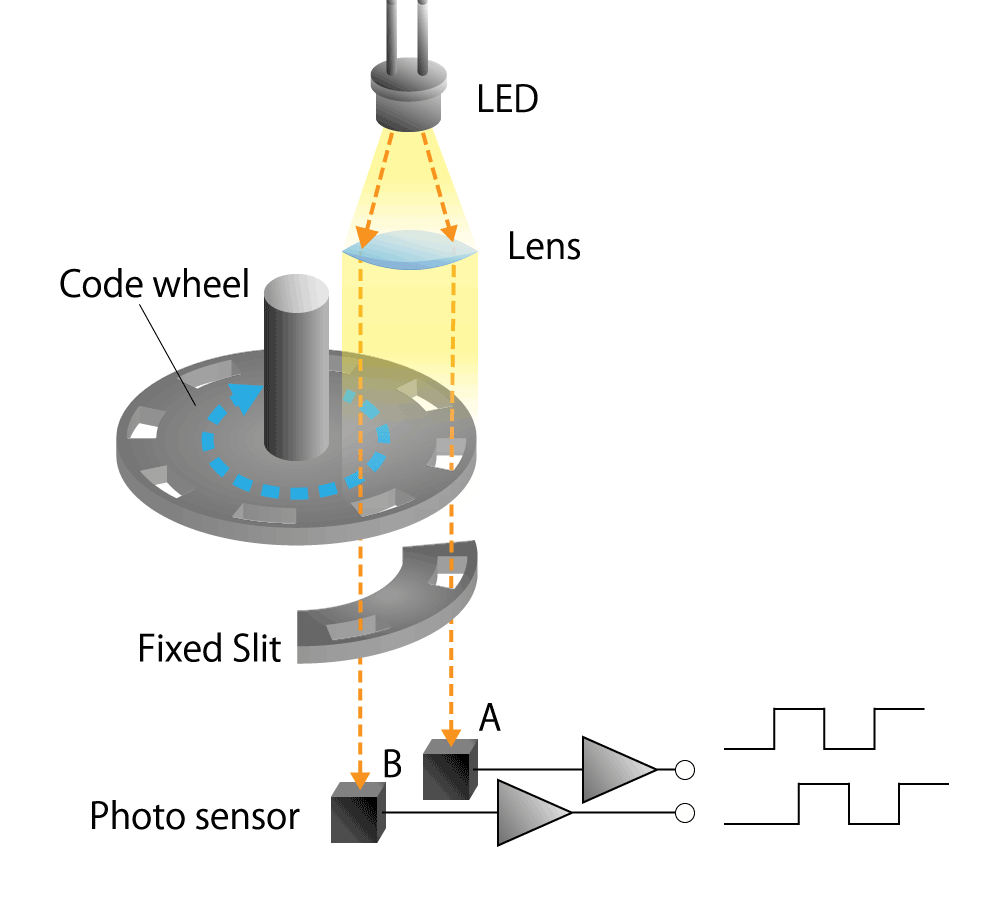
https://www.akm.com/global/en/products/rotation-angle-sensor/tutorial/optical-encoder/
Lecture notes
This slide shows the parts of the optical encoder described on the previous slide, as a single diagram from the AKM tutorial linked at the bottom (https://www.akm.com/global/en/products/rotation-angle-sensor/tutorial/optical-encoder/).
From top to bottom: an LED shines light downward through a lens, which collimates it into a parallel beam. The beam hits a code wheel, a disc mounted on a vertical shaft, with evenly spaced rectangular slots around its rim. A blue dashed arrow shows the wheel rotating. Below the wheel is a stationary curved piece labeled "Fixed Slit," which has its own slots. Two dashed light paths pass through both the wheel and the fixed slit and land on two photo sensors, labeled A and B. Each sensor feeds an amplifier, and each amplifier outputs a square wave. The two square waves have the same shape but are shifted by about a quarter of a period.
The fixed slit acts as a mask. Light reaches a sensor only when a wheel slot lines up with a fixed-slit opening, which gives a clean on/off transition instead of a blurry edge. Counting pulses tells you how far the shaft has turned.
The second sensor is the key detail. Because A and B are offset by a quarter period, called quadrature, the order of their edges tells you which way the shaft spins. Students often assume one channel is enough. It counts motion but cannot tell forward from reverse. We return to direction in a few slides.
Next, we look at the two encoder types, starting with incremental encoders.
7. Optical Encoder (4/11)
2 Different types of optical encoders,
An incremental optical encoder:
- The code disc divided into sectors that are alternately transparent and opaque.
- A light source is positioned on one side of the disc, and a light sensor on the other side.
- As the disc rotates, the output from the detector switches alternately on and off, depending on whether the sector appearing between the light source and the detector is transparent or opaque.
The encoder produces a stream of square wave pulses which, when counted, indicate the angular position of the shaft.
Lecture notes
This slide is text only. It says there are two different types of optical encoders and focuses on the first, the incremental optical encoder. Three bullet points describe it. The code disc is divided into sectors that alternate between transparent and opaque. A light source sits on one side of the disc and a light sensor on the other. As the disc rotates, the detector output switches on and off depending on whether a transparent or an opaque sector is between the source and the detector. A closing sentence states that the encoder produces a stream of square wave pulses which, when counted, indicate the angular position of the shaft.
This formalizes the LED, code wheel and photo sensor picture from the previous slide. "Incremental" means the encoder reports only changes in position: each pulse means the shaft moved by one fixed step. To know where the shaft is, the microcontroller counts pulses from some starting point and converts the count to an angle. The other type, the absolute encoder, comes later in this lecture.
A common mistake is to think the pulse count is a true absolute angle. It is only relative to wherever counting started. Keep that in mind, because it leads to the problems we look at shortly: which way is the shaft turning, and what happens when you power the robot off?
Quick check: if you count 50 pulses, how many degrees did the shaft turn? You cannot answer until you know how many slits the disc has. That is exactly the resolution question on the next slide.
8. Optical Encoder - Resolution
https://www.akm.com/global/en/products/rotation-angle-sensor/tutorial/type-mechanism-2/
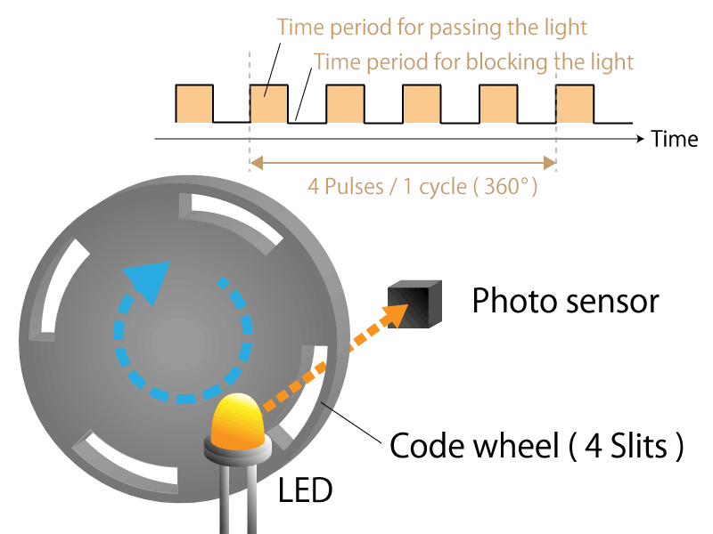
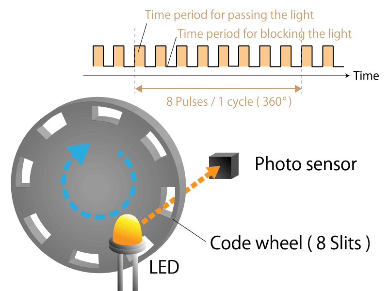
4-slit incremental type rotary encoder
8-slit incremental type rotary encoder
Lecture notes
This slide compares two incremental rotary encoders side by side to show what sets resolution. On the left, an LED shines through a code wheel with 4 evenly spaced slits onto a photo sensor. Above it, a square-wave timing plot shows the sensor output: high during the "time period for passing the light," when a slit is in front of the LED, and low during the "time period for blocking the light," when solid wheel is in the way. One full revolution, 360 degrees, produces 4 pulses. On the right is the same setup with an 8-slit wheel. Its square wave is twice as dense, with 8 pulses per 360 degrees.
The key idea is that the resolution of a simple incremental encoder equals the number of slits per revolution. The angle per pulse is resolution = 360 / N degrees, where N is the slit count. The 4-slit wheel gives 360 / 4 = 90 degrees per pulse, and the 8-slit wheel gives 360 / 8 = 45 degrees per pulse. Any rotation smaller than one pulse goes undetected, so more slits give finer angle measurement. In practice, you get more slits by cutting finer slots on the disc.
Quick check: how many slits would you need for 1 degree resolution? The answer is 360.
Before moving on, look at the waveform and ask what it cannot tell you. A single channel looks the same spinning clockwise or counterclockwise. That problem is the subject of the next slide.
Source: https://www.akm.com/global/en/products/rotation-angle-sensor/tutorial/type-mechanism-2/
9. What are some problems?
Lecture notes
This section slide reads "What are some problems?" in large white text on the dark blue Illinois background with faint hand-sketched equations and diagrams.
Pause here and think about the single-channel encoder from the last slide. If one sensor only counts pulses, can you tell whether the shaft turned clockwise or counterclockwise? A vibration back and forth looks like forward motion. Your resolution is also limited by the slit count. Next, you see how a second channel solves the direction problem.
10. Optical Encoder - Direction (1/6)
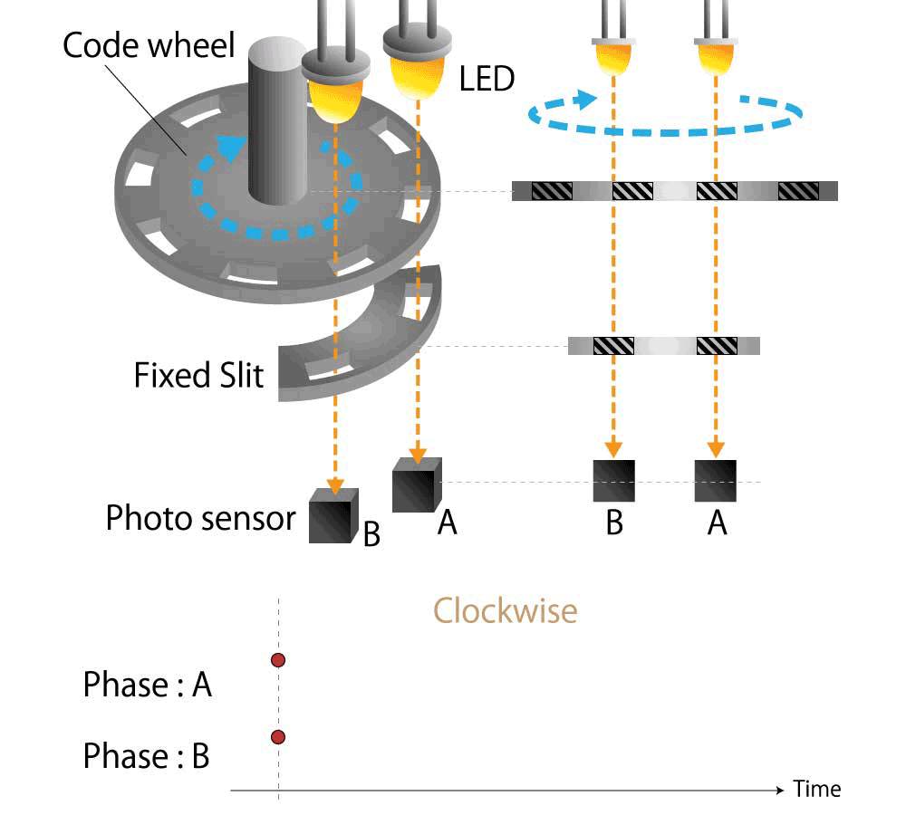
https://www.akm.com/global/en/products/rotation-angle-sensor/tutorial/type-mechanism-2/
Lecture notes
This slide, titled "Optical Encoder - Direction," answers one of the problems from the last slide: a single LED and photo sensor counts pulses but cannot tell which way the wheel is turning. The fix is a second channel.
On the left is a 3D drawing. A rotating code wheel with evenly spaced slots sits on a shaft, with a dashed blue arrow showing rotation. Two LEDs shine down through the code wheel, then through a stationary piece labeled "Fixed Slit," onto two photo sensors labeled B and A. On the right is a side view of the same light path: the two LEDs, the slotted wheel drawn as a striped strip, the fixed slit strip below it, and sensors B and A at the bottom. The windows in the fixed slit are offset so the two sensors see the slots a quarter of a slot cycle apart. Below is a timing plot labeled "Clockwise," with rows for Phase A and Phase B against time. On this frame only the starting points of each trace are shown; the waveforms build up as the animation plays.
That quarter-cycle offset is the key idea. It produces two square waves 90 degrees out of phase, called quadrature signals. The order of their edges tells you the direction. In clockwise rotation A changes before B. As the next slide shows, counterclockwise reverses this, and B leads A. Notice that only the fixed slit's offset creates the phase shift. The code wheel is the same as before.
Quick check: if you see A rise while B is low, then B rise, which way is the wheel turning?
Source: https://www.akm.com/global/en/products/rotation-angle-sensor/tutorial/type-mechanism-2/
11. Optical Encoder - Direction (2/6)
https://www.akm.com/global/en/products/rotation-angle-sensor/tutorial/type-mechanism-2/

Lecture notes
This slide shows the same quadrature optical encoder from the previous slide, now animated rotating counterclockwise. On the left, a code wheel with evenly spaced slots turns on a shaft. Two LEDs above it shine down through the slots, then through a fixed slit, onto two photo sensors labeled B and A. On the right, a side view shows the same light paths: the moving slotted strip of the wheel, the fixed slit below it, and the two sensors. A dashed blue arrow marks the counterclockwise rotation. Below is a timing plot titled "Counter Clockwise," with traces for Phase A and Phase B against time. In this still frame the plot is just starting, with a red dot at the left edge of each trace; in the animation, both traces grow into square waves. The diagram comes from the AKM rotation-angle-sensor tutorial at https://www.akm.com/global/en/products/rotation-angle-sensor/tutorial/type-mechanism-2/.
The key idea is that the fixed slit's windows are offset so the two sensors see light a quarter of a slot cycle apart. Each output is therefore a square wave, and the two waves are 90 degrees out of phase. Compare this plot to the clockwise one: in counterclockwise rotation, phase B leads phase A, and when the direction reverses, the lead reverses too. A single channel only tells you that the shaft moved. The order of the two channels tells you which way it moved.
Quick check: if A rises while B is already high, which signal is leading, and in which direction is the shaft turning?
Next, you formalize this by detecting the rising and falling edges of each channel. That is how the eQEP peripheral on the Red Board counts up or down for your robot's wheels.
12. Optical Encoder - Direction (3/6)
https://www.akm.com/global/en/products/rotation-angle-sensor/tutorial/type-mechanism-2/
Lecture notes
This slide puts the two previous animations side by side so you can compare them directly. On the left is the clockwise case and on the right the counterclockwise case. Each half shows the same hardware. A code wheel with evenly spaced slots turns on a shaft. Two LEDs shine down through the wheel and then through a fixed slit onto two photo sensors labeled A and B. A dashed blue arrow shows the direction of rotation. Next to each 3D drawing is a flattened side view: the moving strip of slots, the fixed slit below it, and the two sensors. Under each half is a timing plot of Phase A and Phase B versus time, starting from a single marked instant. The figures come from the AKM rotation angle sensor tutorial at https://www.akm.com/global/en/products/rotation-angle-sensor/tutorial/type-mechanism-2/
The key point is that the hardware is identical in both halves and only the rotation direction changes. The fixed slit's windows are offset by a quarter of a slot period. Because of that offset, A and B are square waves of the same frequency shifted 90 degrees apart. In the clockwise case A leads B, so A changes first and B follows a quarter cycle later. In the counterclockwise case B leads A. The frequency of the pulses tells you speed. Which channel leads tells you direction.
To check your understanding: if you see A rise while B is low, then B rise while A is high, which way is the shaft turning?
Next, you see how the board detects these edges and how counting up and down gives net rotation.
13. Optical Encoder - Direction (4/6)
- To encode the direction you have 2 channels, each of them offset by a phase of 90 degrees
- The rotational direction can be determined depending on which pulse of the phase A or phase B rises B.
- By subtracting the number of pulses in reverse rotation, the amount of rotation can be accurately determined.
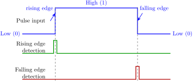
Lecture notes
This slide summarizes what the animations on the last two slides showed: how a quadrature encoder tells you which way the shaft is turning, and how edges are detected so pulses can be counted.
The first bullet says the encoder has two channels, A and B, offset by a phase of 90 degrees, a quarter of one slot cycle. The second bullet says the direction of rotation is determined by which phase, A or B, rises first. The third bullet says that subtracting the pulses counted in reverse rotation gives an accurate measure of the net amount of rotation.
The timing diagram has three traces. The top blue trace is a pulse input that starts low (0), jumps to high (1) at a rising edge, stays high, then drops back to low (0) at a falling edge. Below it, a green "rising edge detection" trace produces a brief spike only at the instant of the rising edge. A red "falling edge detection" trace produces a brief spike only at the falling edge. Dashed vertical lines show that each spike lines up exactly with its edge.
The key idea is that the hardware reacts to edges, the moments when a signal changes, not to the high or low levels. When A has a rising edge, the controller checks B. If B is still low, A is leading. If B is already high, B is leading, so the shaft is turning the other way. Each edge then adds or subtracts one count, and the net count is your position.
A common mistake is counting pulses on one channel only. If the wheel jitters back and forth, every pulse is added, and the error keeps growing.
Quick check: each channel has two edges per cycle and there are two channels. How many countable events is that per slot? Answer: four, which sets up the Gray code sequence on the next slide.
14. Optical Encoder - Direction (5/6)
- The combined output of (A, B), forms a 2-bit Gray code sequence (only 1 bit changes each timestep).
- The states cycle through 4 quadrants (00, 01, 10, 11)
If clockwise (CW): A leads B, the sequence is:
If counter-clockwise (CCW): B leads C, the sequence is:
If I do not have an animation, I did not have time to make it.
Lecture notes
This slide turns the two encoder channels into a single 2-bit state and shows how the order of those states reveals direction. On the previous slide you saw how rising and falling edges on each channel are detected. Here those edges are combined into one picture.
The first point is that the pair (A, B) forms a 2-bit Gray code sequence: only one bit changes at each step. The second point is that the pair takes four possible values, 00, 01, 10 and 11, which the slide calls quadrants. That list is just the set of states, not the order they occur in.
The slide then gives the two orders as sequences of (A, B) pairs. If the shaft turns clockwise, A leads B, and the sequence is (0,0) to (1,0) to (1,1) to (0,1), then back to (0,0). If it turns counterclockwise, B leads A, and the sequence is (0,0) to (0,1) to (1,1) to (1,0), then back to (0,0). The slide text reads "B leads C"; that is a typo for "B leads A." A small note in the corner says that if a slide has no animation, the instructor did not have time to make one.
Why does the Gray code property matter? Because the two channels are 90 degrees out of phase, a legal step never flips both bits at once. So every transition tells you unambiguously which way you moved, one count per edge. That gives four counts per slot, which is the 4x resolution you get from quadrature.
A common mistake is assuming "clockwise" is fixed. It depends on how the encoder is mounted and wired, and swapping the A and B wires flips the sign of your count.
Quick check: you read 11 and then 01. Which direction is that? (Clockwise.) The next slide turns these sequences into a state machine that increments or decrements a counter.
15. Optical Encoder - Direction (6/6)
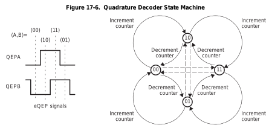
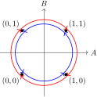
Lecture notes
This slide shows the same quadrature idea in three equivalent ways, all describing the two encoder channels, A and B, as one 2-bit state.
On the left is the eQEP signals timing diagram. QEPA and QEPB are square waves offset by a quarter cycle (90 degrees). Dashed vertical lines mark the combined state (A,B) as it steps through 00, then 10, then 11, then 01. Here A rises first, so A leads B.
In the middle is Figure 17-6, the Quadrature Decoder State Machine from the TI reference manual. The four states sit in a diamond: 00 on the left, 10 at the top, 11 on the right, and 01 at the bottom. Solid curved arrows between neighbouring states are labeled "Increment counter" in one direction and "Decrement counter" in the other. Moving 00 to 10 to 11 to 01 to 00 increments the count, and the reverse order decrements it. Dashed lines cross the diamond between 00 and 11, and between 10 and 01. Those jumps flip both bits at once, which Gray code never allows, so the hardware flags them as errors. Such an error usually means noise or that the shaft spun too fast for the sampling.
On the right, the four states are plotted as corners in the A–B plane. A blue inner loop runs counterclockwise through (0,0), (1,0), (1,1), (0,1), which is the increment direction. A red outer loop runs clockwise, which is the decrement direction. Which way the loop circulates is the direction of rotation.
Notice that the counter changes on every edge of both channels, giving four counts per line on the disc. That is the four-times resolution you will configure in the eQEP. Also remember that which physical shaft direction counts "positive" depends on how you wire A and B. Swapping them flips the sign.
Quick check: if you see 11 followed by 10, is the count going up or down? (Down.)
Next, consider what happens to this count when the power goes off.
16. What if you turn the robot off?
Lecture notes
This slide is a single question in large white text on the dark blue course background: "What if you turn the robot off?"
So far the quadrature encoder only counts changes from wherever it started. Turn the power off and that count is gone. When the robot powers back on, the counter starts at zero, and you have no idea where the wheel or joint actually is. You would have to re-home it. Before moving on, ask yourself: how could the disc itself tell you its angle? That is the idea behind the absolute encoder, which is next.
17. Optical Encoder (5/11)
An absolute optical encoder
- An absolute optical encoder's disc is divided up into N sectors
-
- Each sector is further divided radially along its length into opaque and transparent sections, forming a unique N-bit digital word with a maximum count of 2N – 1.
- The digital word formed radially by each sector increments in value from one sector to the next, usually employing Gray code.
- Binary coding could be used but can produce large errors if a single bit is incorrectly interpreted by the sensors.
- Gray code overcomes this defect: the maximum error produced by an error in any single bit of the Gray code is only 1 LSB after the Gray code is converted into binary code.
- A set of N light sensors responds to the N-bit digital word which corresponds to the disc's absolute angular position.
Lecture notes
This slide answers the question from the previous slide: what happens when you turn the robot off? An incremental encoder only counts pulses, so when power is lost the count is lost and you must re-home. An absolute optical encoder reads its position directly from the disc, so it knows its angle the moment it powers up.
The slide is text only. The disc is divided into sectors around its circumference. Along each sector's radius, rings of opaque and transparent sections form a unique N-bit digital word. The slide writes the maximum count as "2N – 1"; read this as 2 to the power N, minus 1, written 2^N − 1. N light sensors, one per ring, read the word at a fixed line. That word is the disc's absolute angular position. For example, 5 bits gives 32 positions, or 360/32 = 11.25 degrees per step.
The codes usually step from one sector to the next in Gray code rather than plain binary. In binary, going from 0111 to 1000 flips every bit at once. If the sensors are slightly misaligned, they might briefly read 1111 or 0000, which is a huge jump in angle.
In Gray code, adjacent positions differ by exactly one bit. A single misread bit therefore gives an error of at most 1 LSB (least significant bit, one angular step) after conversion to binary. To convert, the binary MSB equals the Gray MSB. Each lower bit is the next-higher binary bit XOR the Gray bit: b_i = b_(i+1) XOR g_i.
Next, you compare incremental and absolute discs side by side. Then you look at a real code table and decide whether it uses Gray or binary.
18. Optical Encoder (6/11)
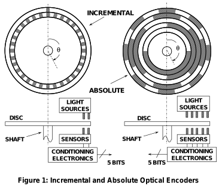
https://www.analog.com/media/en/training-seminars/tutorials/mt-029.pdf
Lecture notes
This slide is Figure 1 from the Analog Devices tutorial MT-029, "Incremental and Absolute Optical Encoders," linked at the bottom of the slide (https://www.analog.com/media/en/training-seminars/tutorials/mt-029.pdf). It puts the absolute encoder from the previous slide side by side with the incremental encoder we covered earlier.
On the left is the incremental disc. It has a ring of evenly spaced slots, and the shaft angle theta is measured from a vertical reference line through the center. Below the disc, a side view shows the disc mounted on a shaft. Two light sources sit above the disc and two sensors sit below it. The sensors feed conditioning electronics.
On the right is the absolute disc. It has five concentric coded tracks, with shaded arcs of different lengths. The innermost coded track is opaque for about half a turn, and the arcs get shorter and more numerous toward the outside. Its side view shows five light sources and five sensors, one pair per track, also feeding conditioning electronics.
Both outputs are labeled "5 bits," but they mean different things. The incremental encoder only produces pulses, so a 5-bit position exists only because a counter accumulates those pulses from some starting point. If you lose power, you lose the count, which is the problem from slide 16. The absolute encoder reads its 5-bit word directly off the disc at every angle. With 5 bits there are 2^5 = 32 unique codes, so the resolution is 360/32 = 11.25 degrees, and the position is known immediately at power-up.
Keep an eye on how the tracks change from one sector to the next. On the next slide, you decide whether a similar disc uses Gray code or plain binary.
19. Optical Encoder (7/11)
https://www.akm.com/global/en/products/rotation-angle-sensor/tutorial/type-mechanism-2/
![Absolute rotary encoder disk with five concentric slit tracks, read along a line at 0 degrees; slits pass light (1) and dark areas block it (0). Track 1 (innermost) is open for half a turn, and each track outward has twice as many slits, up to track 5. The table gives the codes for tracks 1 to 5 in 11.25-degree steps: 0 is 00000, 11.25 is 00001, 22.5 is 00010, 33.75 is 00011, 45 is 00100, 56.25 is 00101, 67.5 is 00110, 78.75 is 00111, 90 is 01000, and so on, through 315 at 11100, 326.25 at 11101, 337.5 at 11110, and 348.75 at 11111.](L6-7_files/1b14ceb8d558.png)
What type of encoding is this? Gray or binary?
Lecture notes
This slide asks a question to check what you took from the last two slides: is this encoder disc Gray coded or binary coded? On the left is an absolute encoder disc with five concentric tracks, numbered 1 (innermost) to 5 (outermost), read along a line at 0 degrees. Dark areas block the light and read as 0; white slits pass the light and read as 1. Track 1 is open for half a turn, and each track outward has twice as many slits, so track 5 alternates fastest.
On the right, a table lists the 5-bit code, tracks 1 through 5, at each angle in 11.25-degree steps. Five bits give 2^5 = 32 sectors, and 360 / 32 = 11.25 degrees per sector. The codes run 0 degrees = 00000, 11.25 = 00001, 22.5 = 00010, 33.75 = 00011, 45 = 00100, and so on up to 78.75 = 00111, 90 = 01000, and finally 348.75 = 11111, which is the maximum count of 31.
Take a moment to decide before reading on. The answer is binary. The codes simply count 0, 1, 2, 3 in standard binary, with track 1 as the most significant bit. A Gray code changes only one bit between neighboring sectors. Look at the step from 78.75 to 90 degrees: 00111 becomes 01000, so four bits flip at once. If the sensors are even slightly misaligned at that edge, the reader could briefly see something like 01111, which means 168.75 degrees. That is a huge error from a tiny timing mismatch. This is the defect Slide 17 warned about, and the next slide's video shows how Gray code fixes it.
20. Optical Encoder (8/11)
YouTube video: Gray Code's Error Reduction with Encoders (Marius Juston)
Lecture notes
This slide plays a short video, "Gray Code's Error Reduction with Encoders" by Marius Juston, at https://youtu.be/VKmMoT5hpVY. Two animated code disks spin side by side, one binary and one Gray coded, with a red line marking where the sensors read. It answers the last slide's question: that disk was binary. In binary, several bits flip at once (00111 to 01000), so slight sensor misalignment gives wrong codes. In Gray code only one bit changes per step, so errors stay within one step.
21. Optical Encoder (9/11)
https://www.akm.com/global/en/products/rotation-angle-sensor/tutorial/type-mechanism-2/
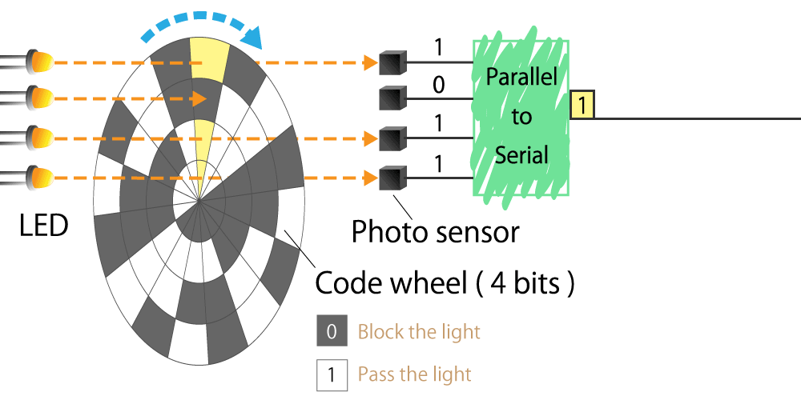
Lecture notes
This slide shows how an absolute optical encoder gets its reading off the shaft and onto a single wire. The diagram, from the AKM rotation angle sensor tutorial linked at the bottom of the slide, has four LEDs on the left, each shining an orange beam through one of four concentric tracks on a rotating code wheel labeled "Code wheel (4 bits)." A blue arrow above the wheel shows its direction of rotation. The legend says a dark segment blocks the light and reads 0, and a clear segment passes the light and reads 1.
At the angle shown, a highlighted sector lines up with the beams. Only the second beam is blocked, so the four photo sensors on the right read 1, 0, 1, 1 at the same time. These four parallel lines feed a green box labeled "Parallel to Serial," which sends the bits out one at a time on a single output line. The bit currently on that line is 1.
The key idea is that an absolute encoder reads its position directly from the pattern on the wheel. It does not count pulses. With 4 tracks you get 2^4 = 16 unique codes, so each code covers 360/16 = 22.5 degrees. As the Gray code video showed, those codes are usually Gray coded so that only one bit changes between neighboring sectors.
Why convert parallel to serial? A real encoder may have 12 or more tracks. Running one wire per bit to the microcontroller wastes pins and cabling, while a serial stream needs only a clock and a data line. This is exactly the motivation for SSI, the serial interface you will see later in this lecture.
Next, we look at the eQEP peripheral. It is the F28379D's hardware for reading the other type of encoder, the incremental encoder.
22. eQEP (1/7)
Lecture notes
This is a section title slide with the single word "eQEP" in dark blue on the orange Illinois background, decorated with faint hand-drawn engineering sketches.
eQEP stands for enhanced Quadrature Encoder Pulse module, the peripheral on the TMS320F28379D that decodes incremental encoders. You just saw how encoders produce A and B phase signals and how absolute encoders use Gray code. Now you see how the Red Board hardware counts those pulses for you, so your code reads motor position without missing edges.
23. eQEP (2/7)
The eQEP peripheral is used to read data from an incremental optical encoder only.
As such what is the main data that needs to be read in?
The 2 phase signals!
Lecture notes
This slide has three lines of text. The first states that the eQEP peripheral reads data from an incremental optical encoder only, with the word "incremental" in bold. The second asks: as such, what is the main data that needs to be read in? The third gives the answer: the 2 phase signals!
eQEP stands for enhanced Quadrature Encoder Pulse module. It is the dedicated hardware on the F28379D that interprets encoder signals so your code does not have to watch every edge in software. The word "incremental" is bold because of the previous slide: an absolute encoder, like the 4-bit code wheel you just saw, outputs a complete position word, so the eQEP is not the tool for it. Later in this lecture you read absolute encoders over a serial interface called SSI instead.
An incremental encoder only reports changes in position, using two square waves called channel A and channel B. They are 90 degrees out of phase, which is what "quadrature" means. Counting their edges gives you how far the shaft has turned. Checking which channel leads the other tells you the direction of rotation, as you saw in the direction slides earlier. Some encoders also provide an index pulse once per revolution, and the eQEP has an input for it, but A and B carry the essential information.
Quick check: if you connect only channel A, what can you still measure, and what do you lose? You can still measure how far the shaft turns, but you lose the direction of rotation.
Next, the overview diagram shows how the eQEP turns these two phase signals into a count and a direction.
24. eQEP – Overview diagram

Does the decoding base on the phase signal
Lecture notes
This slide shows Figure 17-4 from the TI reference manual, the functional block diagram of the eQEP (enhanced Quadrature Encoder Pulse) peripheral. A red box highlights the quadrature decoder unit, QDU, on the right, with a red arrow and the note "Does the decoding base on the phase signal," meaning the QDU does the decoding based on the A and B phase signals.
Trace the signals from right to left. The encoder pins EQEPxA, EQEPxB, index EQEPxI and strobe EQEPxS enter through the GPIO mux and reach the QDU. The QDU is configured by its register QDECCTL. It turns the two phase signals into QCLK, a count pulse for each edge, and QDIR, the direction. It also passes on the index (QI) and strobe (QS) signals and flags a phase error (PHE) if the A/B sequence is impossible, for example both lines changing at once.
QCLK and QDIR drive the position counter and control unit, PCCU. Its 32-bit QPOSCNT register holds the encoder count, with QPOSINIT and QPOSMAX for initialization and wraparound, QPOSCMP for compare, and latch registers. The PCCU sends interrupts (EQEPxINT) to the PIE. The same signals feed the capture unit QCAP, used to measure speed from the time between edges, and a watchdog QWDOG that detects a stalled encoder. The unit timer UTIME and SYSCLKOUT provide timing. A clock enable bit, EQEPxENCLK, in the system control registers must be on for any of this to run. Everything is readable over the data bus.
For your lab code, the key point is that the hardware does the decoding. You only read QPOSCNT.
Next, you see how to set up the GPIO pins that feed this block.
25. eQEP (3/7)
// setup eQEP1 pins for input
EALLOW;
//Disable internal pull-up for the selected output pins for reduced power consumption
GpioCtrlRegs.GPAPUD.bit.GPIO20 = 1; // Disable pull-up on GPIO20 (EQEP1A)
GpioCtrlRegs.GPAPUD.bit.GPIO21 = 1; // Disable pull-up on GPIO21 (EQEP1B)
GpioCtrlRegs.GPAQSEL2.bit.GPIO20 = 2; // Qual every 6 samples
GpioCtrlRegs.GPAQSEL2.bit.GPIO21 = 2; // Qual every 6 samples
EDIS;
Lecture notes
This slide shows a short block of C code that configures the two input pins for eQEP1, the first quadrature encoder module. After the comment "setup eQEP1 pins for input," the code runs EALLOW, then four register writes, then EDIS.
EALLOW and EDIS bracket the block because the GPIO control registers are protected. EALLOW unlocks writes to them, and EDIS locks them again. If you forget EALLOW, your writes are silently ignored.
The first two lines set GpioCtrlRegs.GPAPUD.bit.GPIO20 = 1 and GpioCtrlRegs.GPAPUD.bit.GPIO21 = 1. GPIO20 carries EQEP1A and GPIO21 carries EQEP1B, which are the two phase signals from the previous slides. In the GPAPUD register, writing 1 disables the internal pull-up resistor. This is the opposite of what many students expect: 1 means off, not on. The slide's comment says "output pins," but these pins are actually inputs. The point still holds: the encoder drives the lines itself, so the pull-up is not needed, and disabling it saves a little power.
The next two lines set GpioCtrlRegs.GPAQSEL2.bit.GPIO20 = 2 and the same for GPIO21. GPAQSEL2 is the qualification select register for GPIO16 through GPIO31. The value 2, which is binary 1,0, selects six-sample qualification. This means a change on the pin is only accepted after six consecutive samples agree, which filters out noise spikes on the encoder lines.
Note that routing these pins to the eQEP1 function through the pin mux is a separate configuration step from this slide.
The next two slides show exactly how that six-sample qualifier works, including a timing diagram of a glitch being rejected.
26. eQEP - QPxQSELn (1/2)
The number of times the signal is sampled is either three samples or six samples as specified in the qualification selection (GPAQSEL1, GPAQSEL2, GPBQSEL1, and GPBQSEL2) registers. When three or six consecutive cycles are the same, then the input change will be passed through to the MCU.
All the samples must be consistent within that sampling period to change its output for the next output range.
Helps with reducing noise as a random change would not change the result.
Lecture notes
This slide is all text. It explains what the qualification selection registers, GPAQSEL1, GPAQSEL2, GPBQSEL1 and GPBQSEL2, actually do to an input pin. The slide makes three points. First, the pin is sampled either three or six times, as chosen in these registers, and an input change passes through to the MCU only when three or six consecutive samples agree. Second, all of those samples must be consistent within that sampling period before the output changes. Third, this reduces noise, because a random one-sample change cannot flip the result.
This is exactly what the setup code on the previous slide configured. The lines GpioCtrlRegs.GPAQSEL2.bit.GPIO20 = 2 and GPIO21 = 2 mean "qualify every 6 samples" on the encoder A and B pins. Each pin gets a two-bit field. The value 1 selects three samples, and the value 2, binary 1 0, selects six.
Why does this matter for an encoder? Motor wiring is electrically noisy, especially near PWM-driven H-bridges. A single spike on channel A or B looks like an edge to the quadrature decoder. Every false edge adds or subtracts a count, and those errors accumulate in your position estimate.
The trade-off is delay. Requiring six matching samples means a real edge reaches the eQEP slightly later. The spacing between samples is set by the qualification period, so the window must stay much shorter than the time between genuine encoder edges at your top motor speed.
A common mistake is writing to the wrong register. GPAQSEL1 covers GPIO0 to 15 and GPAQSEL2 covers GPIO16 to 31, which is why GPIO20 and 21 live in GPAQSEL2.
Quick check: if the pin reads 0, 0, 1, 0, 0, 0, does the qualified output change? The next slide's timing diagram answers this.
27. eQEP - QPxQSELn (2/2)
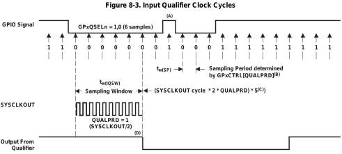
All samples are 0, change output next cycle to be 0!
Set GPIO value to 0
Not all samples are 0, keep the output next cycle to be 0!
Keep GPIO value to 0
All samples are 1, change output next cycle to be 1!
Change GPIO value to 1
Lecture notes
This slide walks through the input qualification timing diagram, TI's Figure 8-3, "Input Qualifier Clock Cycles," with red annotations showing how the qualifier decides what value to pass to the CPU. It uses the 6-sample mode, GPxQSELn = 1,0 (binary 10, decimal 2), which is exactly what we set for GPIO20 and GPIO21 in the eQEP setup code.
The top trace is the raw GPIO signal, with an up arrow at each sampling instant and the sampled bit written underneath. The sequence reads 1, 1, then a run of 0s, then a single 1, then more 0s, then a long run of 1s. The sampling period is set by GPxCTRL[QUALPRD]. With QUALPRD = 1, the pin is sampled every SYSCLKOUT/2, that is, every 2 system clock cycles. Six samples span five sampling periods, so the sampling window is SYSCLKOUT period * 2 * QUALPRD * 5.
The first red box holds six consecutive 0 samples. The qualifier therefore sets its output, the bottom trace, to 0 on the next cycle.
The second box contains a brief high glitch caught by one sample. Not all six samples agree, so the qualifier keeps the output at 0 and the glitch never reaches the eQEP.
The third box holds six consecutive 1 samples, so the output changes to 1.
The tradeoff is delay: a real edge appears at the qualifier output roughly one sampling window late. Quick check: if a noise spike lasts less than one sampling period, can it ever change the output? No. A change only passes through when six consecutive samples agree.
28. eQEP (4/7)
// setup eQEP1 pins for input
// This specifies which of the possible GPIO pins will be EQEP1 functional pins.
GPIO_SetupPinMux(20, GPIO_MUX_CPU1, 1); // set pin mux EQEP2A
GPIO_SetupPinMux(21, GPIO_MUX_CPU1, 1); // set pin mux EQEP2B
EQep1Regs.QEPCTL.bit.QPEN = 0; // make sure eQEP in reset
EQep1Regs.QDECCTL.bit.QSRC = 0; // Quadrature count mode
EQep1Regs.QPOSCTL.all = 0x0; // Disable eQEP Position Compare
EQep1Regs.QCAPCTL.all = 0x0; // Disable eQEP Capture
EQep1Regs.QEINT.all = 0x0; // Disable all eQEP interrupts
EQep1Regs.QPOSMAX = 0xFFFFFFFF; // use full range of the 32-bit count
EQep1Regs.QEPCTL.bit.FREE_SOFT = 2; // eQEP unaffected by emulation suspend in Code Composer
EQep1Regs.QPOSCNT = 0; // Set the initial position of the encoder
EQep1Regs.QEPCTL.bit.QPEN = 1; // Enable eQEP
Lecture notes
This slide shows the complete C code you use to initialize eQEP1 on the Red Board. After the last slide's discussion of input qualification, this is where those ideas become actual register writes. Read it top to bottom; the order matters.
The first two lines call GPIO_SetupPinMux on GPIO 20 and GPIO 21, giving them to CPU1 with mux index 1. This routes those pins to the eQEP peripheral instead of plain GPIO. The comments say EQEP2A and EQEP2B, but that is a copy slip. As the next slide's mux table shows, GPIO20 and GPIO21 at index 1 are EQEP1A and EQEP1B, which matches the EQep1Regs used below.
Next, QEPCTL.QPEN = 0 holds the eQEP in reset so you can configure it safely. QDECCTL.QSRC = 0 selects quadrature count mode, which counts every edge of both channels A and B, giving four counts per encoder line, and decodes direction automatically. QPOSCTL, QCAPCTL and QEINT are all written to 0x0, disabling position compare, capture and interrupts, none of which you need here. QPOSMAX = 0xFFFFFFFF uses the full 32-bit range before the counter wraps. FREE_SOFT = 2 lets the counter keep running when you pause the code in Code Composer Studio, so you never lose counts while debugging. QPOSCNT = 0 zeroes the position. Finally, QPEN = 1 enables the module.
A common mistake is writing QPOSCNT or other settings before or after the wrong QPEN step. Configure while in reset, then enable last.
Quick check: if your motor encoder has 500 lines, how many counts per revolution does QPOSCNT show? The answer is 2000. Next, we look more closely at the QSRC options.
29. eQEP (5/7)
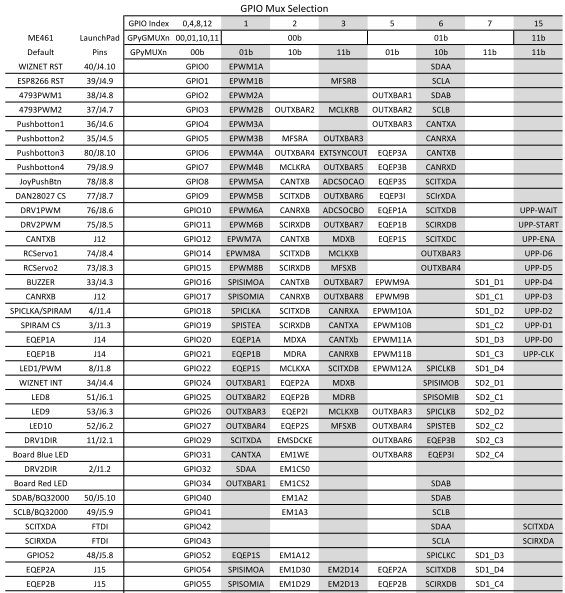
Lecture notes
This slide shows the GPIO Mux Selection table for the course LaunchPad. It explains where the pin numbers and mux index in the setup code on the previous slide come from. Each row is one GPIO pin. The left columns give the board's default use and the header pin. The remaining columns list the peripheral function available at each mux index, from 0 to 15. Three pairs of cells are boxed in red. EQEP3A and EQEP3B are on GPIO6 and GPIO7 at index 5. EQEP1A and EQEP1B are on GPIO20 and GPIO21 at index 1, on connector J14. EQEP2A and EQEP2B are on GPIO54 and GPIO55 at index 5, on connector J15.
The mux index is built from two register fields: index = 4*GPyGMUXn + GPyMUXn. Index 1 is GMUX 00b with MUX 01b. Index 5 is GMUX 01b with MUX 01b. GPIO_SetupPinMux(pin, GPIO_MUX_CPU1, index) writes both fields for you, so you only pass the index number from this table.
Check this against the code on slide 28. Pins 20 and 21 with index 1 select EQEP1A and EQEP1B. That matches EQep1Regs, even though the code comments say EQEP2A and EQEP2B. For eQEP2, you would use pins 54 and 55 with index 5. The eQEP functions also appear on other pins, including GPIO6 to 11 and GPIO24 to 27. Watch the board defaults, though: GPIO6 and GPIO7 are wired to Pushbutton3 and Pushbutton4, so routing eQEP3 there takes over those buttons.
Quick check: which pin and index give you EQEP2B? The answer is GPIO55, index 5.
Next, we look at how QDECCTL.QSRC chooses the way those A and B signals drive the position counter.
30. eQEP – QDECCTL:QSRC
Position-counter source selection
- 0h (R/W) = Quadrature count mode (QCLK = iCLK, QDIR = iDIR)
- 1h (R/W) = Direction-count mode (QCLK = xCLK, QDIR = xDIR)
- 2h (R/W) = UP count mode for frequency measurement (QCLK = xCLK, QDIR = 1)
- 3h (R/W) = DOWN count mode for frequency measurement (QCLK= xCLK, QDIR = 0)
Lecture notes
This slide zooms in on one line from the setup code two slides back: EQep1Regs.QDECCTL.bit.QSRC = 0. QDECCTL is the quadrature decoder control register, and QSRC is its two-bit field that chooses the position-counter source, meaning where the counter gets its clock (QCLK) and its direction (QDIR) signals.
The slide lists the four possible values. The "h" means hexadecimal, and "R/W" means you can both read and write the field.
0h is quadrature count mode. QCLK = iCLK and QDIR = iDIR, where the "i" stands for internal: the eQEP's own quadrature decoder looks at the A and B channels and generates the clock and direction itself.
1h is direction-count mode. QCLK = xCLK and QDIR = xDIR, where the "x" means the clock and direction come from external signals on the input pins rather than being decoded from quadrature.
2h is up-count mode. QCLK = xCLK with QDIR fixed at 1, so the counter only counts up.
3h is down-count mode. QCLK = xCLK with QDIR fixed at 0, so it only counts down.
Modes 2 and 3 are not for tracking position. They count pulses on one input so you can measure that signal's frequency.
On the robot, the motor encoders output two quadrature channels, so you always use 0h. That is why the lab code writes QSRC = 0. A common mistake is choosing up-count mode because "the wheel only goes forward." Doing so throws away direction information, and the count keeps rising even when the wheel reverses.
The next two slides show how quadrature mode decodes A and B, and then how the other modes work.
31. eQEP – QDECCTL:QSRC – Quadrature Count Mode
The quadrature decoder generates the direction and clock to the position counter in quadrature count
mode. Uses the 2-phase input to get the position and direction, this is the standard method.
Lecture notes
This slide zooms in on the default and most common setting of QSRC, quadrature count mode (QSRC = 0). Here the eQEP's own quadrature decoder looks at the two encoder channels, QEPA and QEPB, and produces both the counting clock and the direction signal for the position counter.
On the left is a timing diagram labeled "eQEP signals." QEPA and QEPB are square waves of the same frequency, shifted a quarter cycle apart. Vertical dashed lines mark the moments between edges, and the pair (A,B) at those moments reads 00, then 10, then 11, then 01.
On the right is TI Figure 17-6, the Quadrature Decoder State Machine. It has four circled states, 00, 10, 11 and 01, joined by curved arrows.
Moving forward through the sequence 00 to 10 to 11 to 01 and back to 00 is labeled "increment counter." Moving the other way, 00 to 01 to 11 to 10 to 00, is labeled "decrement counter."
Dashed straight arrows cross the middle between 00 and 11, and between 10 and 01. Those jumps mean both bits changed at once. That should never happen with a clean quadrature signal, so the eQEP flags it as a phase error. It usually means noise or an encoder spinning faster than the inputs can be sampled.
The key insight is that the order of the states gives you direction. Because every edge on A or B is one state step, the counter also changes four times per encoder line. A 500-line encoder therefore gives 2000 counts per revolution.
A common mistake: if your wheel counts negative when it rolls forward, A and B are effectively swapped. You can fix this with the SWAP bit or with a sign change in code.
Next, you see the other QSRC options, for encoders that output clock and direction instead.
32. eQEP – QDECCTL:QSRC – Others Mode
Direction-Count Mode
Some position encoders provide direction and clock outputs, instead of quadrature outputs. In such cases,
direction-count mode can be used.
- QEPA input will provide the clock for the position counter
- QEPB input will have the direction information.
The position counter is incremented on every rising edge of a QEPA input when the direction input is high, and decremented when the direction input is low.
Up-Count Mode / Down-Count Mode
The counter direction signal is hard-wired for up / down -count and the position counter is used to measure the frequency of the QEPA input.
In up-count mode, it is recommended that the application not configure QEPB as a GPIO mux option, or ensure that a signal edge is not generated on the QEPB input.
Lecture notes
This slide covers the other three settings of the QSRC field in the QDECCTL register. The previous slide covered the standard quadrature count mode, QSRC = 0. The slide has two text sections and no figures.
The first section is direction-count mode, QSRC = 1. Some position encoders do not output two quadrature square waves. Instead they output a clock line and a direction line. For those, the eQEP stops decoding A and B as quadrature phases:
The QEPA pin becomes the clock for the position counter.
The QEPB pin carries the direction.
On every rising edge of QEPA, the counter increments if QEPB is high and decrements if QEPB is low. The quadrature state machine from the last slide is bypassed. The encoder itself has already worked out the direction.
The second section is up-count and down-count mode, QSRC = 2 and QSRC = 3. Here the direction signal is hard-wired: always up (QDIR = 1) or always down (QDIR = 0). The counter simply counts edges on QEPA, so you use it to measure the frequency of that input rather than a position. In up-count mode, the slide recommends that you either leave QEPB unassigned in the GPIO mux or make sure no signal edge ever appears on the QEPB input. A stray edge there can disturb the count.
A common mistake connects this to the lab. The motor encoders on your robot are quadrature encoders, so you keep QSRC = 0. If you select direction-count mode with a quadrature encoder, the counter treats channel B as a direction bit. It then counts only the rising edges of A, and the counts it gives you are wrong.
The next slide pulls all four modes together in TI's eQEP decoder block diagram.
33. eQEP (6/7)
![Block diagram of the eQEP decoder unit (TI Figure 17-5). Inputs EQEPxA, B, Index and Strobe each pass through an optional inverter selected by polarity bits (QAP, QBP, QIP, QSP), and a SWAP mux can exchange A and B. A quadrature decoder produces an internal clock, an internal direction and a phase-error flag. QSRC selects QCLK and QDIR: quadrature mode, direction-count mode (clock from A, direction from B), up count or down count. XCR sets x1 or x2 clock resolution. IGATE optionally gates Index with Strobe.](L6-7_files/a3c2c4a9fac6.svg)
Quadrature count mode
Direction count mode
Up/Down count
Lecture notes
This slide shows TI's Figure 17-5, the functional block diagram of the eQEP decoder unit, with three modes listed: quadrature count mode, direction count mode, and up/down count. It shows in hardware how the modes from the last two slides are selected.
On the right, the inputs EQEPxA, B, Index and Strobe each pass through an optional inverter set by a polarity bit (QAP, QBP, QIP, QSP), and the SWAP bit can exchange A and B. In the middle, the quadrature decoder produces an internal clock iCLK, an internal direction iDIR, and the phase-error flag PHE. On the left, two four-input multiplexers controlled by QDECCTL:QSRC choose the signals sent to the position counter, QCLK and QDIR. Setting 00 picks the quadrature decoder outputs. Settings 01, 10 and 11 all take xCLK, which comes from input A.
The red highlighting, labelled "Direction count mode," traces that path. EQEPxA bypasses the quadrature decoder and passes through the XCR block. XCR chooses x1 resolution (count rising edges of A only) or x2 resolution (count both edges). The result feeds the xCLK inputs. A green line carries EQEPxB to the xDIR input at setting 01, so B becomes the direction signal. For up count (10) and down count (11), the direction input is simply tied to 1 or 0.
A common mistake is choosing direction-count mode for the quadrature encoder on your robot motors. B would then be read as a direction level, not a phase, and your counts would be wrong. Use quadrature mode, QSRC = 00, for the lab encoders.
Next, you look at the capture unit, which times the gaps between counts so you can measure low speeds.
34. eQEP - CAP
The eQEP peripheral includes an integrated edge capture unit to measure the elapsed time between the unit position.
This feature is typically used for low-speed measurement using the following equation:
Where,
- : Unit position defined by integer multiple of quadrature edges
- : Elapsed time between unit position events
- : Velocity at time instant “”
Lecture notes
This slide, titled "eQEP - CAP," introduces the edge capture unit built into the eQEP peripheral. Now that the decoder turns encoder edges into a clock and a direction, you can use those edges to measure speed, not just position.
The slide states that the edge capture unit measures the elapsed time between unit position events, and that this is typically used for low-speed measurement. The equation reads: v of k equals X divided by the quantity t of k minus t of k minus 1, which equals X over delta T. In plain text, v(k) = X / (t(k) - t(k-1)) = X / ΔT. X is the unit position, a fixed integer multiple of quadrature edges. Delta T is the elapsed time between two unit position events. v of k is the velocity at time instant k.
The idea is to fix the distance and measure the time. The other approach, counting how many edges arrive in a fixed time window, works well at high speed. At low speed, though, only one or two edges may land in each window, so the velocity estimate jumps between a few coarse values. Timing a known distance with a fast timer gives much finer resolution when the wheel turns slowly. On the F28379D you choose X with a unit position prescaler and the timer rate with a capture clock prescaler.
A common mistake is to forget the edge cases. When the robot is stopped or nearly stopped, delta T grows very large, so the timer can overflow. A direction change between events also makes the measurement invalid. The next slides show these limits.
Quick check: if X is 4 edges and delta T is 2 ms, the velocity is 2000 edges per second.
The next slide's timing diagram compares both methods side by side.
35. Optical Encoder (10/11)
![Timing diagram (TI eQEP edge capture unit): Encoder channels QEPA and QEPB are square waves 90 degrees out of phase. QCLK pulses at every A or B edge, and the position counter QPOSCNT steps up by one on each pulse. Unit-position events (UPEVNT) occur every second count. The capture timer QCTMR ramps and resets at each event, so its peak value, delta T, is the time per fixed distance. Unit-timer pulses (UTOUT) mark a fixed period T, over which position change delta X equals x of k minus x of k minus 1. Speed is delta X over T, or distance over delta T.](L6-7_files/99b704ff8591.svg)
Lecture notes
This slide reproduces TI Figure 17-17, the timing diagram for the eQEP edge capture unit. It is the picture behind the two velocity equations from the last slide.
Read the traces from top to bottom. QEPA and QEPB are the two encoder channels, square waves 90 degrees out of phase. QCLK shows a short pulse at every rising or falling edge of A or B, so you get four pulses per encoder line. QPOSCNT, the position counter, steps up by one on each QCLK pulse, like a staircase. UPEVNT, the unit position event, fires every second count; that spacing is set by a prescaler. QCTMR, the capture timer, ramps upward and resets at each unit position event. Its peak value just before a reset, labeled delta T between t(k-1) and t(k), is the time it took to travel one fixed distance. At the bottom, UTOUT pulses mark a fixed unit period T. Over that period the position changes by delta X = x(k) - x(k-1).
This gives you two ways to estimate speed. With fixed time, v = delta X / T: you count how far the encoder moved in a set period. That works well at high speed, where many counts land in each period. With fixed distance, v = X / delta T: you time how long one unit of distance takes. That works better at low speed, where only one or two counts arrive per period and delta X / T becomes coarse and jumpy.
Quick check: if the robot creeps along at one count per sample period, which method gives you the smoother velocity?
Next, you see the unit timer that generates T, and the conditions that keep the delta T capture valid.
36. eQEP (7/7)
The eQEP peripheral includes a 32-bit timer (QUTMR) that is clocked by SYSCLKOUT to generate periodic interrupts for velocity calculations. Whenever the unit timer (QUTMR) matches the unit period register (QUPRD), it resets the unit timer (QUPRD) it resets the unit timer (QUTMR).
Time measurement () between unit position events will be correct if the following conditions are met:
- No more than 65,535 counts have occurred between unit position events (16-bit register).
- No direction change between unit position events.
Lecture notes
This slide covers the second half of the eQEP velocity hardware. The capture unit from the last two slides measures time per fixed distance. This one adds a unit timer that measures distance per fixed time.
The slide's text says the eQEP includes a 32-bit unit timer, QUTMR, clocked by SYSCLKOUT, the system clock, to generate periodic interrupts for velocity calculations. The second sentence repeats itself on the slide. The intended meaning is this: whenever QUTMR counts up and matches the unit period register, QUPRD, QUTMR resets to zero and a unit time-out event, UTOUT, fires. So QUPRD sets your sample period T. On each time-out you compare the position count now with the previous one, delta x = x_k - x_(k-1), and compute v = delta x / T. This method works well at high speed, where many counts arrive in each period.
The slide then lists two conditions for the time measurement, delta T, between unit position events to be correct. First, no more than 65,535 counts can occur between unit position events, because the capture timer is a 16-bit register. If the shaft turns too slowly, the timer overflows and delta T wraps around to a wrong small value. Second, there can be no direction change between unit position events, because the edges then no longer represent a clean fixed distance.
A common mistake is assuming one method fits all speeds. Use capture (x / delta T) at low speed and the unit timer (delta x / T) at high speed. Check yourself: why does the capture method fail when the robot is nearly stopped?
Next, you see how simple reading the position count actually is in code.
37. Optical Encoder (11/11)
float readEncLeft(void) {
int32_t raw = EQep1Regs.QPOSCNT;
return (raw*(-2*PI/(2000.0*20.0)));
}
Simple as that! You just read the registry!
Lecture notes
This slide shows the payoff of all the eQEP setup: a three-line C function that returns the left wheel angle. The code reads: float readEncLeft(void), open brace. Line one: int32_t raw = EQep1Regs.QPOSCNT; Line two: return (raw*(-2*PI/(2000.0*20.0))); then a closing brace. Below the code the slide says, "Simple as that! You just read the registry!" Here "registry" means the hardware register.
Once eQEP1 is configured for quadrature count mode, the hardware tracks every edge of channels A and B and keeps the running count in QPOSCNT. You never count pulses in software; you just read the register whenever you need the position. Storing the count in an int32_t, a signed 32-bit integer, means a wheel that turns backward past zero gives a negative count instead of a huge unsigned number.
The return line converts counts to radians. The 2000.0 is the number of quadrature counts per motor shaft revolution. The 20.0 is the gearbox ratio, so one wheel revolution is 2000 * 20 = 40,000 counts. Multiplying by 2*pi / 40000 gives the wheel angle in radians. The minus sign corrects direction: the left motor is mounted mirrored, so without it "forward" would read negative. Your right-wheel function may need the opposite sign.
A common mistake is leaving off the gear ratio, which gives motor-shaft radians instead of wheel radians. Another is getting the sign wrong on one side, which makes the robot's odometry spin in place while it actually drives straight.
Quick check: how many counts does a half wheel turn produce? The answer is 20,000.
So far we have used incremental encoders. Next, absolute encoders report the true angle even right after power-up.
38. Absolute Optical Encoder
Lecture notes
This section title slide reads "Absolute Optical Encoder" on the orange Illinois background with faint decorative math sketches.
So far you have used incremental encoders, where reading QPOSCNT only tells you how far the shaft moved since the counter started. Recall the earlier question: what if you turn the robot off? An absolute encoder reports the actual shaft angle at any moment, even right after power-up. Next you see one example, the AM4096 magnetic encoder, read over the SSI protocol.
39. Absolute Encoder (1/2)
There are multiple protocols for reading data from an optical encoder. We only use incremental encoders in this class.
Some protocols use SPI, some use UART or some kind of DAC signal, etc… the only way to be sure is to look at the official documentation!
For the following Magnetic Rotary Encoder (an absolute encoder that uses a magnet on top of the IC), we can extract the data from the SSI communication protocol.
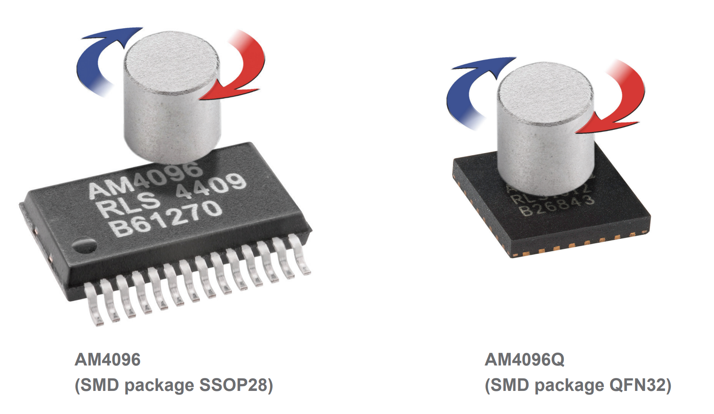
https://www.rls.si/eng/am4096-12-bit-rotary-magnetic-encoder-chip
Lecture notes
This slide, titled Absolute Encoder, makes three points. There are several protocols for reading data out of an encoder, but in this class you only use incremental encoders. Absolute encoders report their position in different ways: some use SPI, some use UART, some output an analog voltage from a DAC, and so on. The only way to know for sure is to read the manufacturer's official documentation. As an example, the slide links to the RLS AM4096 magnetic rotary encoder, an absolute encoder whose angle you can read over the SSI communication protocol. The datasheet is at https://www.rls.si/eng/am4096-12-bit-rotary-magnetic-encoder-chip.
The photo shows two packages of the AM4096 chip: a 28-lead SSOP28 and a smaller leadless QFN32. Above each chip sits a cylindrical magnet, with curved arrows showing the magnet spinning about its axis. The magnet is fixed to the end of the shaft, and Hall sensors inside the chip measure the direction of its magnetic field. That gives the shaft's absolute angle directly, with no counting of pulses.
This answers the earlier question of what happens when you turn the robot off. An incremental count in QPOSCNT starts from zero at power-up, but an absolute encoder reports the true angle immediately. The AM4096 is 12-bit, so one revolution divides into 2^12 = 4096 positions, about 0.088 degrees each.
A common mistake is assuming every encoder outputs A/B quadrature. Always check the datasheet first. Next, you look at the chip's block diagram and then at how SSI clocks the angle out bit by bit.
40. SSI (1/10)
![Block diagram of the AM4096 magnetic rotary encoder chip. A magnetic field enters a Hall array and front-end amplifier, which produce sine and cosine signals. These feed a differential amplifier and a 12-bit interpolator. The interpolated angle drives several output interfaces: incremental A, B and index; SSI, with clock in and data out; analog sine and cosine; UVW commutation; linear voltage through a 10-bit DAC; tacho; and TWI (SDA, SCL). Registers backed by a 32 by 16 EEPROM configure the chip, and two LDO regulators supply power.](L6-7_files/5e7927024050.svg)
Lecture notes
This slide shows Figure 1 from the datasheet: the block diagram of the RLS AM4096 magnetic rotary encoder chip. A magnetic field, labeled B, enters on the left into a Hall sensor array and front-end amplifier. That block produces sine and cosine signals, which feed a differential amplifier and a 12-bit interpolator. The interpolator turns sine and cosine into an angle. Twelve bits means 2^12 = 4096 positions per revolution, about 0.088 degrees each, which is where the part name comes from.
Along the right edge is a column of output interfaces, all driven by that same angle:
The incremental outputs A, B and the index Ri, the same quadrature signals you could read with the eQEP.
SSI, with a Clock input and a Data output. A red box highlights this block.
Analog differential sine and cosine.
UVW motor commutation signals.
A linear voltage, produced by a 10-bit DAC.
A tacho output.
TWI, a two-wire bus with SDA and SCL lines.
At the bottom, registers backed by a 32 by 16 EEPROM store the configuration. A Zero pin sets the zero position, and two LDO regulators power the analog and digital sections from Vext.
The key idea is that one sensor can expose its reading through many protocols, which is why the previous slide said to check the documentation. We focus on SSI, the Synchronous Serial Interface. It is synchronous because a clock line sets the timing of every bit. Your microcontroller acts as master and supplies that clock, and on each clock edge the encoder shifts out one bit of the absolute angle.
Quick check: why does an absolute encoder like this avoid the "what if you turn the robot off" problem from earlier? Next, we look at an SSI timing diagram and see how SPI can generate the clock.
41. SSI (2/10)
Like UART, start with high, then to start communication you start with a low value. The difference is that you are not sending “data” to ask, you are just sending a clock signal. The sensor is sending its preconfigured “data”.
This is a full-duplex signal (you send and receive at the same time).
The data below is specifically for the AS5145H – 12 bit angular magnetic encoder IC
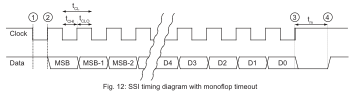
https://look.ams-osram.com/m/5835d15632039c2e
Lecture notes
This slide shows how SSI, the Synchronous Serial Interface, reads an absolute encoder. The previous slide introduced the AM4096, whose block diagram includes an SSI output with clock in and data out. The timing details here come from a similar chip, the AS5145H 12-bit angular magnetic encoder IC. Its datasheet is at https://look.ams-osram.com/m/5835d15632039c2e.
The text makes two points. First, as with UART, the line idles high and communication starts when it goes low. The difference is that you, the master, do not send a request or command. You only supply a clock, and the sensor shifts out its preconfigured data. Second, the slide calls this full duplex: transmitting and receiving happen at the same time, because every clock edge you send brings one data bit back.
The figure is "Fig. 12: SSI timing diagram with monoflop timeout." It shows two traces, Clock on top and Data below:
At marker 1, the idle-high clock is pulled low.
At marker 2, the first rising edge starts the transfer.
Each clock period t_CL is split into a high time t_CHI and a low time t_CLO.
On each rising edge the encoder puts out one bit, MSB first, then MSB-1 and MSB-2. A break in the drawing skips the middle bits, and the sequence ends with D4 through D0.
At marker 3, the clock stays high. The data line stays low for the monoflop timeout t_m.
At marker 4, the data line returns high, and the sensor is ready for the next read.
A common mistake is assuming the angle is the only thing in the bit stream. Check the datasheet for the total number of bits and what each one means.
Next, you see how to generate this clock with the F28379D's SPI module.
42. SSI (3/10)
We can send the clock signal using SPI

Lecture notes
This slide reproduces Figure 18-5 from the TI reference manual, "SPI Module Master Configuration," with a red note: "We can send the clock signal using SPI." A red arrow points at the SPICLK output pin.
The diagram traces data through the SPI peripheral. At the top, inside a dashed box labeled SPIFFENA (the FIFO enable), are two 16-level FIFOs, RX FIFO_0 to RX FIFO_15 and TX FIFO_0 to TX FIFO_15. Each is linked by a 16-bit path to its buffer register, SPIRXBUF and SPITXBUF. Both buffers connect to SPIDAT, the shift register. When TALK is enabled, transmitted bits leave SPIDAT on SPISIMO. Received bits enter on SPISOMI, or on SPISIMO in three-wire mode, which a multiplexer selects using TRIWIRE. Bottom left is a State Control block, clocked by LSPCLK and configured by CLKPOLARITY, CLK_PHASE, SPICHAR and SPIBRR. It drives the SPICLK pin and the active-low enable SPISTE.
The key idea follows from the previous slide. An SSI encoder like the AS5145H needs only a clock from you, and it returns its angle bits one per clock edge. An SPI master does exactly this. Whenever you write a word to SPITXBUF, the module generates SPICHAR+1 clock pulses on SPICLK and shifts the same number of bits in from SPISOMI at the same time, because SPI is full duplex. So you connect SPICLK to the encoder's clock input and SPISOMI to its data output. The word you transmit is a dummy; its only job is to produce clock pulses.
A common mistake is waiting to read without writing anything. In master mode, no write means no clock, and therefore no data.
On the next slides, these same configuration fields set the clock polarity and phase to match the SSI timing, the character length, and the bit rate.
43. SSI (4/10)
Communicate through the SPI
//need clock polarity = 1 (falling edge)
//collect data on falling edge -> phase = 1 (with delay)
SpiaRegs.SPICCR.bit.SPISWRESET = 0; //put spi in reset (reset before changin configurations)
SpiaRegs.SPICCR.bit.CLKPOLARITY = 1; //falling edge clock (starts high)
SpiaRegs.SPICCR.bit.SPICHAR = 7; //shift length for one character is 8 bits
SpiaRegs.SPICTL.all = 0x000E; //0000000000001110->clkphase = 1 (with delay), master mode,
//enable talk, spi int disabled, transmit on falling edge
SpiaRegs.SPIBRR.bit.SPI_BIT_RATE = 49; //set bit rate to 1Mhz so 50Mhz/50?
SpiaRegs.SPIPRI.bit.FREE = 1; //spi contunes even when emu halted
SpiaRegs.SPISTS.all=0x0000; //clear all flags
SpiaRegs.SPIFFCT.all=0x00; //set tx delay to no delays for full duplex ( read and write at the same time )
Lecture notes
This slide shows the first half of the code that configures the F28379D's SPI-A module to read an SSI absolute encoder. On the previous slide we saw that the SPI peripheral can generate the clock SSI needs. Here we set the registers to make that clock match the sensor's timing.
The slide is a block of C code with comments. Two comment lines at the top state the goal: clock polarity = 1, and collect data with phase = 1 (with delay). The register writes, in order:
SPICCR.SPISWRESET = 0 puts the SPI in software reset. You always reset before changing the configuration.
SPICCR.CLKPOLARITY = 1 makes the clock idle high. This matches the SSI clock line from slide 41, which starts high and then pulls low to begin a read.
SPICCR.SPICHAR = 7 sets the character length. The field holds length minus one, so 7 means 8 bits per character.
SPICTL.all = 0x000E, which is binary 1110, sets clock phase = 1 (the half-cycle delay), master mode, and TALK enabled. The SPI interrupt is left disabled for now.
SPIBRR = 49 sets the bit rate. The rate is LSPCLK / (SPIBRR + 1), so with a 50 MHz LSPCLK you get 50 MHz / 50 = 1 MHz. That answers the question mark in the comment.
SPIPRI.FREE = 1 keeps the SPI running when the emulator halts at a breakpoint. SPISTS.all = 0 clears all flags. SPIFFCT = 0 removes any transmit delay, so reading and writing happen back to back in full duplex.
A common mistake is to trust these comments without checking them. Compare the polarity and phase table in the TI reference manual against the sensor's timing diagram yourself.
Quick check: if one character is only 8 bits and the encoder sends 18, how many characters must you clock out? The next slide sets up the FIFOs that handle this.
44. SSI (5/10)
SpiaRegs.SPIFFTX.bit.TXFIFO = 0; //put tx fifo in reset and hold there
SpiaRegs.SPIFFTX.bit.TXFFINTCLR = 1; //clear tx fifo interrupt flag (will not be using)
SpiaRegs.SPIFFRX.bit.RXFIFORESET = 0; //put rx fifo in reset and hold there
SpiaRegs.SPIFFTX.bit.SPIFFENA = 1; //spi fifo enhancements enable
SpiaRegs.SPIFFRX.bit.RXFFINTCLR = 1; //clear receive fifo interrupt flag
SpiaRegs.SPIFFRX.bit.RXFFIL = 3; //interrupt level is one word
SpiaRegs.SPIFFRX.bit.RXFFIENA = 1; //rx fifo interrupt enable
SpiaRegs.SPICTL.bit.OVERRUNINTENA = 1; //overrun interrupt enable
SpiaRegs.SPICTL.bit.SPIINTENA = 1; //interrupt enable
SpiaRegs.SPIFFTX.bit.TXFIFO = 1; //release tx fifo to operate
SpiaRegs.SPIFFRX.bit.RXFIFORESET = 1; //release rx fifo to operate
SpiaRegs.SPIFFTX.bit.SPIRST = 1; //spi can resume tx or rx (pull out of reset)
SpiaRegs.SPICCR.bit.SPISWRESET = 1; //pull spi out of reset (enable spi)
//pie and cpu enables for group 6 done in setupSpib (6.1 and 6.2 for spia)
Lecture notes
This slide continues the SPI setup from the last slide. That slide set the clock polarity, phase, 8-bit character length and 1 MHz bit rate while the SPI was held in reset. This one configures the FIFOs and interrupts, then releases everything. The slide is a block of C register writes on SpiaRegs, grouped into four stages.
Stage one holds both FIFOs in reset: SPIFFTX.TXFIFO = 0 and SPIFFRX.RXFIFORESET = 0. It also clears the TX FIFO interrupt flag (TXFFINTCLR = 1), because the transmit interrupt is not used. It then sets SPIFFENA = 1, which turns on the FIFO enhancements so the 16-level TX and RX FIFOs from the block diagram are active.
Stage two sets up the receive interrupt. RXFFINTCLR = 1 clears any stale flag. RXFFIL = 3 sets the receive FIFO interrupt level. RXFFIENA = 1 enables the RX FIFO interrupt. OVERRUNINTENA and SPIINTENA enable the overrun and SPI interrupts.
Watch the comment on RXFFIL: it says "one word", but a value of 3 means the interrupt fires once three words sit in the RX FIFO. That matches the three 8-bit transfers you will see on the next slides, which add up to 24 bits to cover the encoder's 18-bit frame.
Stage three releases the FIFOs by setting TXFIFO = 1 and RXFIFORESET = 1.
Stage four sets SPIRST = 1 and then SPISWRESET = 1, which takes the SPI module out of reset so it can run.
The order matters. You configure everything while the module is in reset and release it last. The final comment reminds you that the PIE and CPU enables live elsewhere: SPIA's interrupts are PIE group 6, entries 6.1 (receive) and 6.2 (transmit).
Quick check: if you set RXFFIL to 1, when would your interrupt run?
45. SSI (6/10)
This sensor send’s its information from most significant bit to least significant bit (left-to-right)
0b101000101010
This sensor sends it information as 18 bits of information; however, only on the rising edge of the clock signal!
Since how many bits at minimum to do we need to get the full signal?
-bits!
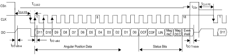
https://look.ams-osram.com/m/5835d15632039c2e
Lecture notes
This slide shows how the absolute encoder actually shifts its data out. The first line says the sensor sends its information from most significant bit to least significant bit, left to right. Below it is a 12-bit example, 0b101000101010. A red arrow runs from the first bit slot, D11, in the timing diagram to the leading 1, which is colored red. A blue arrow runs from slot D0 to the final 0, colored blue. So the first bit on the wire is the MSB of the angle, and D0 is its LSB.
The timing diagram has three traces: chip select CSn, clock CLK, and data out DO. CSn goes low to start a read. Then 18 clock pulses each shift one bit onto DO on the rising edge. The first 12 bits, D11 down to D0, are the angular position data. That gives 2^12 = 4096 counts per revolution, about 0.088 degrees per count. The last six bits are status bits:
OCF and COF, offset compensation finished and cordic overflow.
LIN, a linearity alarm.
Mag INC and Mag DEC, the magnet moving closer or farther.
Even parity.
After that, CSn returns high and DO goes tristate, meaning high impedance. The labeled delays, such as t DO valid and t CSn, are the minimum times from the datasheet linked at the bottom of the slide (https://look.ams-osram.com/m/5835d15632039c2e).
The slide asks how many bits you need at minimum to get the full signal. The answer shown is 18 bits. Because the sensor changes DO on the rising edge, the SPI setup on the previous slides reads on the opposite edge, once each bit is stable.
Here is a quick check for you: SPI characters on this chip are at most 16 bits, so how do you collect 18? The next slide answers that with three 8-bit words.
46. SSI (7/10)
Problem is that SPICHAR (how many bits SPI sends at a time), has a maximum of 16-bits and we need to send 24-bits. So, what do we do?
// Send 8-bit words
SpiaRegs.SPICCR.bit.SPICHAR = 7;
// Sending data function
void sendSPIData(void){
SpiaRegs.SPIFFRX.bit.RXFFIL = 3; //Going to R/W 3 entries
GpioDataRegs.GPCCLEAR.bit.GPIO73 = 1; //pull cs low to get ready to tx/rx
// since we have SPICHAR=7 (8-bits), we only store the top 8-bits
// SPI is set to FIFO mode so this works in a special way
for(i = 0; i < 3; i++) {
SpiaRegs.SPITXBUF = 0xAA00u; // You need to send something to receive something (does not matter what)!
}
}
Lecture notes
This slide solves a practical problem with reading the SSI encoder over the F28379D's SPI peripheral. The text at the top says that SPICHAR, the field that sets how many bits SPI sends at a time, has a maximum of 16 bits, but we need to send 24. So what do we do? Below that is C code. On the slide, the loop limit is covered by a black box so you can work it out yourself; the answer is 3.
The trick is to break the transfer into smaller characters. The code sets SpiaRegs.SPICCR.bit.SPICHAR = 7. SPICHAR holds the character length minus one, so 7 means 8-bit words. Three 8-bit words give 24 clock edges, which covers the 18 bits from the previous slide with some to spare.
Inside sendSPIData, SPIFFRX.bit.RXFFIL = 3 sets the receive FIFO interrupt level. The receive interrupt fires only after three words have arrived. Next, GpioDataRegs.GPCCLEAR.bit.GPIO73 = 1 pulls chip select low, which tells the encoder a read is starting. The loop, for(i = 0; i < 3; i++), then writes 0xAA00u to SPITXBUF three times, filling the transmit FIFO.
Two details matter here. First, SPI is full duplex: the master generates the clock only when it transmits. You must send something to receive something, and the value you send does not matter. Second, transmit data is left-justified. With 8-bit characters, only the top byte, 0xAA, actually shifts out, which is why the comment says only the top 8 bits are stored.
A common mistake is writing 0x00AA and expecting it to go out. Check yourself: how many clock pulses does this function produce? Next, we look at the receive interrupt that reassembles these three bytes into an angle.
47. SSI (8/10)
void spiaRxFifoIsr(void)
{
//received data right justified
spiaRxData[0] = SpiaRegs.SPIRXBUF & 0xFF;
spiaRxData[1] = SpiaRegs.SPIRXBUF & 0xFF;
spiaRxData[2] = SpiaRegs.SPIRXBUF & 0xFF;
theta.d = (((unsigned int) (spiaRxData[0] & 0x7F)) << 5) + (((unsigned int) (spiaRxData[1] & 0xF8)) >> 3);
// ... other math, ignore ...
SpiaRegs.SPIFFRX.bit.RXFFOVFCLR = 1; // Clear Overflow flag
SpiaRegs.SPIFFRX.bit.RXFFINTCLR = 1; // Clear Interrupt flag
PieCtrlRegs.PIEACK.all |= 0x20; // Issue PIE ack
}
Lecture notes
This slide shows the receive half of the SSI read: the SPI receive FIFO interrupt service routine, spiaRxFifoIsr. On the previous slide you queued three 8-bit transmits with RXFFIL = 3, so this interrupt fires once three received bytes are waiting in the FIFO.
The first three lines read SpiaRegs.SPIRXBUF three times into spiaRxData[0], [1] and [2], each masked with 0xFF. Every read of SPIRXBUF pops the next FIFO entry. Notice the asymmetry: transmitted data is left-justified (that is why you wrote 0xAA00), but received data is right-justified. With SPICHAR = 7, the byte you want sits in the low 8 bits.
Next comes the bit surgery. The 24 bits arrive in this order: one leading always-high bit, then D11 down to D0, then the status bits, then don't-care bits. Byte 0 is therefore the leading bit followed by D11 to D5, and byte 1 starts with D4 to D0.
The code rebuilds the angle like this:
theta.d = ((spiaRxData[0] & 0x7F) << 5) + ((spiaRxData[1] & 0xF8) >> 3)
The mask 0x7F drops the leading bit and keeps 7 bits, and the left shift by 5 moves them into bit positions 11 to 5. The mask 0xF8 keeps the top 5 bits of byte 1, and the right shift by 3 moves them into positions 4 to 0. Seven plus five gives the full 12-bit position, from 0 to 4095 counts per revolution.
The last three lines are housekeeping. They clear the overflow flag, clear the FIFO interrupt flag, and acknowledge PIE group 6 by writing 0x20, which is bit 5 and the group that holds SPIA RX. A common mistake is forgetting the PIE acknowledge. If you skip it, the interrupt fires exactly once and never again.
As a quick check, which byte and which bits hold the even parity bit?
Next, you look at the encoder's own timing diagram to see why 19 clock edges is the minimum.
48. Absolute Encoder (2/2)
You need a minimum of 19 low going edges to read in the first always high bit and then the remaining 18 bits.
We are sending 24 bits; the rest does not matter as it gets filtered out.
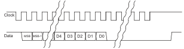
https://www.rls.si/eng/am4096-12-bit-rotary-magnetic-encoder-chip
Lecture notes
This slide shows the timing diagram for reading the absolute encoder over its synchronous serial interface (SSI), taken from the RLS AM4096 12-bit rotary magnetic encoder datasheet at https://www.rls.si/eng/am4096-12-bit-rotary-magnetic-encoder-chip. The diagram has two traces. The clock line idles high and then pulses low repeatedly. The data line also idles high. Just after the first clock pulse it starts shifting out one bit per clock period: MSB, MSB minus 1, and so on down to D4, D3, D2, D1 and D0. Wavy breaks mark bits left out of the drawing. After D0 the data line stays low while extra clock pulses keep coming. Then the clock returns high, and data returns high after it.
The slide makes two points. First, you need at least 19 low-going clock edges: one to read the first bit, which is always high, and 18 more for the remaining bits. Second, the Red Board sends 24 bits anyway, and the extra bits do not matter because the code filters them out.
Why 24? As you saw on the previous slides, SPICHAR maxes out at 16 bits, so the code sends three 8-bit words. That gives 3 * 8 = 24 clock cycles, the smallest multiple of 8 that covers 19.
The receive interrupt does the filtering. Masking spiaRxData[0] with 0x7F throws away the always-high start bit. The 7 bits that remain are shifted left by 5. The top 5 bits of the second byte (mask 0xF8, shifted right by 3) are added in. Together that is 7 + 5 = 12 bits, the 12-bit absolute angle. Everything after that is ignored.
Quick check: if SPICHAR could be set to 19, how many words would you send? (One.)
Next, you match this waveform to the correct SPI clock mode: which edge the data changes on and which edge it is latched on.
49. SSI (9/10)

| Polarity | Phase |
|---|---|
| 0 | 0 |
| 0 | 1 |
| 1 | 0 |
| 1 | 1 |
Lecture notes
This slide shows how the SPI peripheral on the F28379D can be configured to match the clock timing of whatever device you connect, such as the SSI absolute encoder from the previous slide. On the left is a table of the four combinations of clock polarity and clock phase: 0 0, 0 1, 1 0, and 1 1. Each row lines up with one waveform in TI's Figure 18-7, "SPICLK Signal Options," which shows an 8-bit transfer numbered cycle 1 through cycle 8.
Polarity sets the idle level of the clock. Polarity 0 means SPICLK idles low; polarity 1 means it idles high. Phase sets whether the clock edges are delayed by half a cycle. With polarity 0 and phase 0, "rising edge without delay," the clock rises at the start of each cycle. With phase 1, "rising edge with delay," it rises in the middle of each cycle. Polarity 1 gives the mirror images, "falling edge without delay" and "falling edge with delay."
Below the clocks, the data line, labelled SPISIMO/SPISOMI, changes at each cycle boundary. It sends the most significant bit (MSB) in cycle 1 and the least significant bit (LSB) in cycle 8. Before cycle 1 the line still holds the previous data bit, which is what the "See note" label refers to. SPISTE, the active-low slave select going into the slave, drops low before the byte and stays low until it ends. The receive latch points sit mid-cycle, so each bit is sampled when the data is stable, halfway between transitions.
A common mistake is picking the wrong mode. When that happens you still receive data, but every bit is shifted by one position. To check yourself, look back at the encoder diagram, where the clock idles high. Which polarity does that imply?
Next you will see why reading SPIRXBUF three times in a row gives three different values: the FIFO.
50. FIFO (1/4)
Lecture notes
This is a section title slide with the single word "FIFO," which stands for First-In-First-Out. It has the course's orange background with faint hand-drawn equations and sketches as decoration.
You have just seen how to read the absolute encoder over SPI by clocking out 24 bits. That code wrote to SPITXBUF three times in a row and read SPIRXBUF three times. Before you continue, ask yourself how writing to the same register three times can work. The FIFO buffer is the answer, and the next slides explain it.
51. FIFO (2/4)
Previously with the SPI we see that we did 2 weird things:
for(i = 0; i < 3; i++) {
SpiaRegs.SPITXBUF = 0xAA00u;
}
And,
spiaRxData[0] = SpiaRegs.SPIRXBUF & 0xFF;
spiaRxData[1] = SpiaRegs.SPIRXBUF & 0xFF;
spiaRxData[2] = SpiaRegs.SPIRXBUF & 0xFF;
What is weird here?
We are writing / reading from the same place! Why would the output be different?!
Lecture notes
This slide poses a puzzle about the SPI code from the encoder example. It shows two snippets. The first is a for loop that runs three times, i from 0 to 2, and each pass writes the same value to the same register: SpiaRegs.SPITXBUF = 0xAA00u. The second is three lines that each read the same register, SpiaRegs.SPIRXBUF, mask it with 0xFF, and store the result in spiaRxData[0], spiaRxData[1] and spiaRxData[2]. The slide then asks what is weird here, and answers in bold: we are writing and reading from the same place. Why would the output be different?
Stop and think about it. If SPITXBUF were an ordinary memory variable, writing it three times in a row would just overwrite it, and only the last write would survive. Likewise, reading SPIRXBUF three times would give the same value three times. Yet the code clearly expects three separate bytes to go out and three different bytes to come back.
A small detail is worth noticing here. With 8-bit SPI characters, the transmit value goes in the upper byte, so 0xAA00 sends 0xAA because the data is shifted out MSB first. Received data lands in the lower byte, which is why each read is masked with & 0xFF to keep only the 8 received bits.
The resolution is that these are not plain variables. They are hardware registers, and behind them sits a queue. The next slides introduce that queue, the FIFO, or first-in-first-out buffer. A common mistake is to treat peripheral registers like normal memory and assume a read has no side effects. Here, each read pops a value.
52. FIFO (3/4)
Instead of waiting every interrupt cycle to write long pieces of text to the SPI connection, we can instead use FIFO (First-In-First-Out), which is a buffer queuing system.
When you fill in one of the buffers RX / TX, the value automatically goes to one of the 16 FIFO slots (instantaneously), to be used later!
This allows you to store, in one function call, 16 FIFO buffer values both for transmit and receive!
Uses only “16 CPU cycles” instead of 16 interrupt calls!
Allows for large read / writes.
Lecture notes
This slide answers the puzzle from the previous slide: how can writing to SPITXBUF three times in a row, or reading SPIRXBUF three times, give different results? The answer is the FIFO, which stands for First-In-First-Out, a hardware queue built into the SPI module.
On the right is Figure 18-5 from the TI reference manual, the SPI module in master configuration. At the top, inside a dashed box labeled SPIFFENA (the FIFO enable bit), are two stacks of 16 slots each: RX FIFO_0 through RX FIFO_15 and TX FIFO_0 through TX FIFO_15. A red arrow points at the RX FIFO stack. Below them, 16-bit paths connect the stacks to SPIRXBUF and SPITXBUF, and those connect to the SPIDAT shift register. SPIDAT shifts bits out on SPISIMO, gated by TALK, and shifts bits in on SPISOMI, or on SPISIMO in three-wire mode, selected by TRIWIRE. A state-control block, clocked by LSPCLK and configured by CLKPOLARITY, CLK_PHASE, SPICHAR and SPIBRR, drives SPICLK and the active-low SPISTE enable.
With the FIFO enabled, each write to SPITXBUF pushes a word into the next TX slot, and each read of SPIRXBUF pops the oldest received word. That is why the same register name returns new data each time. You can queue up to 16 words in one function call and let the hardware clock them out, rather than handling each word in its own interrupt. This is what makes large SSI or SPI reads and writes practical.
A common mistake is reading more words than you transmitted. In SPI, every word you send clocks one word back in.
Next, we trace the earlier loop slot by slot.
53. FIFO (4/4)
Looking back:
// Shifts into SPIDATA on the MSB side
for(i = 0; i < 3; i++) {
SpiaRegs.SPITXBUF = 0xAA00u;
}
// Shifts into SPIDATA on the LSB side
spiaRxData[0] = SpiaRegs.SPIRXBUF & 0xFF;
spiaRxData[1] = SpiaRegs.SPIRXBUF & 0xFF;
spiaRxData[2] = SpiaRegs.SPIRXBUF & 0xFF;
For the TX, TX FIFO_{0,..,15} start empty.
i = 0, TX FIFO_0 = 0xAAu;
i = 1, TX FIFO_{0,1} = 0xAAu;
i = 2, TX FIFO_{0,1,2} = 0xAAu;
For the RX, RX FIFO_{0,1,2} has data
Takes from RX FIFO_0 FIFO_{1,2} has data
Takes from RX FIFO_1 FIFO_{2} has data
Takes from RX FIFO_2 FIFO has no more data
(technically the next FIFO is always FIFO_0)
Lecture notes
This slide answers the puzzle from the previous slide: why writing to SPITXBUF three times, or reading SPIRXBUF three times, gives you three different words instead of overwriting or repeating one.
On the left is the same code. A comment says writes shift into SPIDAT on the most significant bit (MSB) side. A for loop runs i from 0 to 2 and writes 0xAA00u to SpiaRegs.SPITXBUF each time. A second comment says reads shift into SPIDAT on the least significant bit (LSB) side. Three lines then read SpiaRegs.SPIRXBUF, mask each with & 0xFF, and store the results in spiaRxData[0], [1] and [2].
On the right is a step-by-step trace. The transmit FIFO, slots 0 through 15, starts empty. At i = 0, TX FIFO slot 0 holds 0xAA. At i = 1, slots 0 and 1 hold 0xAA. At i = 2, slots 0, 1 and 2 hold 0xAA. Each write does not overwrite SPITXBUF. It pushes a new entry onto the back of the queue.
After the transfer, RX FIFO slots 0, 1 and 2 hold data. The first read takes slot 0, leaving slots 1 and 2. The second read takes slot 1, leaving slot 2. The third read takes slot 2, and the FIFO is empty. A note on the slide says that, technically, the read always comes from FIFO_0. The queue shifts forward, so the oldest entry is always at the head.
The slide writes 0xAA in the FIFO although the code writes 0xAA00. With 8-bit characters, transmit data must be left-justified, so 0xAA00 sends the byte 0xAA. Received data arrives right-justified, so the & 0xFF keeps only the new byte.
A common mistake is reading SPIRXBUF before all three words have arrived. You then pop stale or missing data.
The next slide, Example 18-1, shows exactly how bits shift through SPIDAT.
54. FIFO – Example 18-1
Lecture notes
This slide reproduces Example 18-1 from the TI reference manual. It shows what happens inside the SPI shift register, SPIDAT, during a transfer. The table has three rows of 16 bit cells, most significant bit on the left. SPIDAT before transmission holds 0111 0011 0111 1011, which is 0x737B. An arrow on the left marks the bit transmitted out, a 0. An arrow on the right marks a received bit, x, entering. SPIDAT after transmission holds 1110 0110 1111 011x. SPIRXBUF after transmission holds the same value. The footnote says x is 1 if the SPISOMI line is high and 0 if it is low, assuming master mode.
Compare the rows and you will see that only one bit moved. This example uses a one-bit character. On one clock edge, the MSB, 0, shifts out on SPISIMO. Every remaining bit moves one place left, and the bit sampled on SPISOMI fills the least significant position. The whole register is then copied into SPIRXBUF. So SPIRXBUF holds the newly received bit plus 15 leftover bits from the old data. With x = 0 the result is 0xE6F6, and with x = 1 it is 0xE6F7.
The same thing happens with 8-bit characters. Only the low 8 bits of SPIRXBUF are new data; the upper bits are leftovers. That is why the code on the previous slide writes 0xAA00, left-justified, and reads SPIRXBUF & 0xFF.
A common mistake is forgetting that mask and getting garbage in the upper byte. Quick check: with an 8-bit character, which bits of SPIRXBUF can you trust? Next, we state these justification rules formally.
55. SSI (10/10)
The four-bit SPICHAR register field specifies the number of bits in the data character (1 to 16). The following statements apply to characters with fewer than 16 bits:
- Data must be left-justified when written to SPIDAT and SPITXBUF.
- Data read back from SPIRXBUF is right-justified.
- SPIRXBUF contains the most recently received character, right-justified, plus any bits that remain from previous transmission(s) that have been shifted to the left (shown in Example 18-1).
Lecture notes
This slide wraps up the SSI and SPI material with the rules for data characters shorter than 16 bits. It has text only, no figures. It says the four-bit SPICHAR register field sets how many bits are in one data character, from 1 to 16. For characters with fewer than 16 bits, three rules apply. First, data must be left-justified when you write it to SPIDAT or SPITXBUF. Second, data read back from SPIRXBUF is right-justified. Third, SPIRXBUF holds the most recently received character, right-justified, plus any leftover bits from earlier transmissions that were shifted to the left, as shown in Example 18-1.
These rules follow from the shift register you just saw in Example 18-1. SPIDAT always shifts out of its most significant end, bit 15, and new bits enter at its least significant end, bit 0. So an 8-bit character must sit in the upper byte to be sent first, and the received 8 bits land in the lower byte. One detail to watch: the SPICHAR value is the character length minus one. For 8-bit characters you set SPICHAR to 7, and 0xF gives 16 bits.
This explains the code from the FIFO slides. Writing SpiaRegs.SPITXBUF = 0xAA00 places 0xAA in the upper byte, so it goes out first. Reading SpiaRegs.SPIRXBUF & 0xFF keeps only the new byte and masks off the stale bits shifted into the upper byte.
A common mistake is writing 0x00AA for an 8-bit transfer. That sends eight zeros and never sends your data.
To check yourself: with SPICHAR set for 12 bits, how would you write the value 0xABC, and what mask would you apply when reading?
Next, you leave serial communication and move on to PWM.
56. PWM (1/4)
Lecture notes
This slide is a section title. It reads "PWM" in large dark blue letters, centered on the course's orange background with faint hand-drawn equations and diagrams behind it.
That finishes the encoder half of this lecture. You have seen how the eQEP peripheral counts quadrature pulses, and how SSI and SPI read absolute encoders through the FIFO. So far that is sensing. Now we switch to actuation: how the Red Board drives LEDs, DC motors through an H-bridge, RC servos, and the piezo buzzer.
PWM stands for pulse width modulation. It is how a digital pin that can only be on or off delivers a controllable average power. To get there, the next slide starts with a simple question: how does an LED become dimmer?
57. How do LEDs become dimmer?
Lecture notes
This slide is a question slide: the large white title "How do LEDs become dimmer?" sits centered on the dark blue Illinois background with faint hand-sketched equations and an orange accent line.
Before moving on, think about it. A GPIO pin on the Red Board can only output high, 3.3 V, or low, 0 V. So how can it make an LED glow at half brightness? Take a guess. The next slide answers it with pulse width modulation, which switches the pin on and off faster than your eye can follow.
58. PWM - Introduction (1/2)
Stands for Pulse Width Modulation
- Rapidly turns the output signal on and off to adjust the average power delivered
2 main parameters:
- Period / carrier frequency (): The total time of one cycle
- Duty cycle (: The fraction of time the signal is high
Again, if the period is fast enough, since our eyes only see at 30-40 Hz, we only see the average power! Which is why we see a continuous dinner or brighter light!
Lecture notes
This slide introduces PWM formally, answering the question from the previous slide about how LEDs become dimmer. It is all text, with no figures.
The slide says PWM stands for Pulse Width Modulation. It rapidly turns the output signal on and off to adjust the average power delivered. It names two main parameters. The first is the period, or carrier frequency, written T_pwm, which is the total time of one on-off cycle. The second is the duty cycle, D, the fraction of time the signal is high, given as D = T_on / T_pwm, read "D equals T on divided by T pwm." The last line says that if the period is fast enough, because our eyes only respond at about 30 to 40 Hz, we see only the average power. That is why we see a continuous, dimmer or brighter light. The slide's word "dinner" is a typo for "dimmer."
The output is only ever fully on or fully off, yet the load responds to the average. If the high level is 3.3 V, the average voltage is about D times 3.3 V. For example, a PWM signal at a carrier frequency of 20 kHz has a period of 1/20000 s = 50 microseconds. At 25 percent duty it is high for 12.5 microseconds per cycle and averages about 0.825 V. The frequency sets how fast the switching happens. The duty cycle sets how much power gets through.
A common mistake is to think a higher frequency makes the LED brighter. It does not. Brightness follows D. The frequency only has to be fast enough that you do not see flicker.
As a quick check, ask yourself what the duty cycle is if T_on is 1 ms and T_pwm is 4 ms. The answer is 0.25.
Next, an animation shows this waveform changing in real time.
59. PWM - Introduction (2/2)
YouTube video: PWM Animation (Marius Juston)
https://youtu.be/IO5RBfq_5Uo?si=KMDtMRWZ-Gs9MQLh
Lecture notes
This slide plays a short animation, PWM Animation by Marius Juston, at https://youtu.be/IO5RBfq_5Uo?si=KMDtMRWZ-Gs9MQLh. The frame shown plots signal versus time as a yellow square wave at a 25% duty cycle, high for a quarter of each period. Below it is an LED labeled "Brightness: Lower." As the duty cycle changes, the LED brightens or dims, showing that your eye sees only the average power. Next, you look at how the F28379D's ePWM time-base counter generates this waveform.
60. PWM (2/4)
![Block diagram: ePWM time-base submodule. SYSCLK passes through the EPWMCLK prescaler (set by PERCLKDIVSEL EPWMCLKDIV), then the clock prescaler (TBCTL HSPCLKDIV and CLKDIV), producing TBCLK. TBCLK clocks the 16-bit up/down counter TBCTR, whose mode is set by TBCTL CTRMODE. A comparator against the period register TBPRD (with a shadow register) flags CTR equals PRD and resets the counter. The phase register TBPHS can load the counter on a sync input when PHSEN is enabled. Multiplexers select sync outputs EPWMxSYNCO and EPWMxSYNCPER.](L6-7_files/9cc027d24e11.svg)
Clock signal
Lecture notes
This slide shows Figure 15-5 from the TI technical reference manual, "Time-Base Submodule Signals and Registers," for the ePWM module. Two parts are highlighted in red and labeled "Clock signal." The first is the clk input of the counter block. The second is the clock chain at the bottom of the figure. In that chain, SYSCLK enters the EPWMCLK prescaler, which is set by ClkCfgRegs.PERCLKDIVSEL[EPWMCLKDIV]. Its output, EPWMCLK, then passes through a second clock prescaler, set by TBCTL[HSPCLKDIV] and TBCTL[CLKDIV], and the result is TBCLK.
The rest of the diagram shows where TBCLK goes. It clocks the 16-bit time-base counter TBCTR, and TBCTL[CTRMODE] selects whether that counter counts up, down, or up-down. A comparator checks TBCTR against the period register TBPRD, and when they match it raises the CTR = PRD event, which can reset the counter. TBPRD has a shadow register and an active register, so a new period can be loaded safely. The phase register TBPHS can load the counter when a sync event arrives, if TBCTL[PHSEN] is enabled. On the right, multiplexers choose the sync outputs EPWMxSYNCO and EPWMxSYNCPER.
The key idea is that every PWM timing you set starts from this clock chain. TBCLK is the "tick" of the counter: each tick moves TBCTR by one count. Slowing TBCLK with the dividers lets you reach lower PWM frequencies, because TBPRD is only 16 bits and so cannot exceed 65535.
A common mistake is forgetting that HSPCLKDIV and CLKDIV multiply together: TBCLK = EPWMCLK / (HSPCLKDIV * CLKDIV).
Next, you see how the counter modes and TBPRD turn TBCLK ticks into a PWM period.
61. PWM (3/4)
The frequency of PWM events is controlled by the time-base period (TBPRD) register and the mode of the time-base counter. The time increment for each step is defined by the time-base clock (TBCLK) which is a prescaled version of the ePWM clock (EPWMCLK).
The time-base counter has three modes of operation selected by the time-base control register (TBCTL):
- Up-Down-Count Mode: In up-down-count mode, the time-base counter starts from zero and increments until the period (TBPRD) value is reached. When the period value is reached, the time-base counter then decrements until it reaches zero.
- Up-Count Mode: In this mode, the time-base counter starts from zero and increments until it reaches the value in the period register (TBPRD).
- Down-Count Mode: In down-count mode, the time-base counter starts from the period (TBPRD) value and decrements until it reaches zero.
Lecture notes
This slide is all text, under the title PWM. It states that the frequency of PWM events depends on two things: the value in the time-base period register, TBPRD, and the mode of the time-base counter. Each count step lasts one period of the time-base clock, TBCLK, which is a prescaled, meaning divided-down, version of the ePWM clock, EPWMCLK. The slide then lists the three counter modes, selected in the time-base control register, TBCTL.
This connects to the block diagram on the previous slide. SYSCLK is divided to make EPWMCLK, which is divided again by the HSPCLKDIV and CLKDIV prescalers to make TBCLK. TBCLK clocks the 16-bit counter TBCTR, and the CTRMODE field of TBCTL chooses how that counter moves.
In up-count mode, the counter starts at zero, counts up to TBPRD, then resets to zero and repeats, giving a sawtooth. In down-count mode, it starts at TBPRD, counts down to zero, then reloads TBPRD, giving a reversed sawtooth. In up-down-count mode, it counts from zero up to TBPRD and then back down to zero, giving a triangle wave.
The common mistake is to forget that the mode changes the period. For the same TBPRD and TBCLK, an up-down cycle takes roughly twice as long as an up-count cycle, so the PWM frequency is about half. When you configure the motor PWM on your Red Board, you choose TBPRD based on both the clock and the mode.
The next slide shows timing diagrams of all three modes with TBPRD equal to 4, along with the exact period formulas.
62. PWM – Counter mode
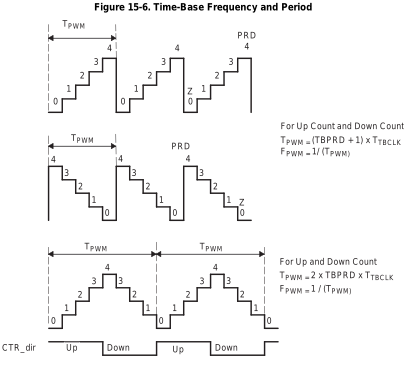
Up count
Down count
Up-down count
Lecture notes
This slide shows Figure 15-6 from the TI reference manual, "Time-Base Frequency and Period." It puts the three counter modes from the previous slide side by side, all with the period register TBPRD set to 4. Each step in the staircase lasts one time-base clock tick, T_TBCLK.
In up count, the counter steps 0, 1, 2, 3, 4, then drops back to 0. That is five distinct values, so T_PWM = (TBPRD + 1) * T_TBCLK, read as "T PWM equals TBPRD plus one, times the TBCLK period."
In down count, the counter starts at 4, steps down to 0, then reloads 4. The period is the same: (TBPRD + 1) * T_TBCLK.
In up-down count, the counter rises from 0 to 4 and then falls back to 0, giving a triangle wave. A signal labeled CTR_dir toggles between Up and Down to show the direction. Here T_PWM = 2 * TBPRD * T_TBCLK, read as "two times TBPRD times the TBCLK period," because the peak and the zero are each visited only once per cycle.
In every mode, F_PWM = 1 / T_PWM.
With TBPRD = 4, up count and down count give a period of 5 ticks, and up-down count gives 8 ticks. A common mistake is to forget the +1 in up count, or the factor of 2 in up-down count. Either one puts your PWM frequency off.
Quick check: suppose TBCLK is 50 MHz and you want 20 kHz. In up count, TBPRD = 50e6/20e3 - 1 = 2499. In up-down count, TBPRD = 50e6/(2*20e3) = 1250.
The counter alone only sets the frequency. Next, the counter-compare submodule compares this counter against CMPA through CMPD, and that comparison is what sets the duty cycle.
63. PWM – Counter-Compare Submodule
The counter-compare submodule takes as input the time-base counter value.
- This value is continuously compared to the counter-compare A (CMPA) counter-compare B (CMPB) counter-compare C (CMPC) and counter-compare D (CMPD) registers.
- When the time-base counter is equal to one of the compare registers, the counter-compare unit generates an appropriate event.

Lecture notes
On the previous slide you saw how the time-base counter, TBCTR, counts up, down, or up and down between zero and the period value TBPRD. This slide shows what the ePWM does with that counter value: the counter-compare submodule.
The text explains that the counter-compare submodule takes the time-base counter value as its input. It continuously compares that value to four registers: counter-compare A, B, C and D, called CMPA, CMPB, CMPC and CMPD. When the counter equals one of these registers, the unit generates an event.
Below the text is Table 15-3 from the TI reference manual, titled "Action-Qualifier Submodule Possible Input Events." It has three columns: signal, description, and registers compared. CTR = PRD means the counter equals the period value (TBCTR = TBPRD). CTR = Zero means the counter equals zero (TBCTR = 0x00). CTR = CMPA and CTR = CMPB mean the counter matches compare register A or B. The T1 and T2 events come from comparator, trip or sync-in signals and compare no registers. The last row, a software-forced event, is an asynchronous event that your code triggers.
The key idea is that these events are the only moments when the output pin can change. Only CMPA and CMPB appear in this table. CMPC and CMPD create extra events used elsewhere in the ePWM, such as interrupts or ADC start-of-conversion triggers. When you change CMPA, you change the moment the output switches, and that is how you will set duty cycle in lab.
Quick check: in up-count mode, how many CTR = CMPA events occur per period? In up-down mode, how many?
Next, we look at synchronization and phase. After that, we look at the actions the action qualifier applies when each of these events occurs.
64. PWM (4/4)
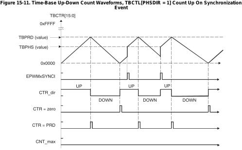
Lecture notes
This slide shows Figure 15-11 from the TI technical reference manual: "Time-Base Up-Down Count Waveforms, TBCTL[PHSDIR = 1], Count Up On Synchronization Event." It applies the up-down counter mode from slide 62 to a new situation: an external synchronization pulse arrives in the middle of a period.
The top trace is the time-base counter, TBCTR, a 16-bit register whose vertical axis runs from 0x0000 to 0xFFFF. Three levels are marked: TBPRD, the period value at the peaks; TBPHS, the phase value, somewhat below the peak; and zero. The counter normally forms a triangle, rising to TBPRD and falling back to zero.
Below the counter are five digital traces. EPWMxSYNCI is the sync input, which pulses twice. CTR_dir shows the count direction, UP or DOWN. CTR = zero pulses at each valley. CTR = PRD pulses at each peak. CNT_max stays low the whole time, because the counter never reaches 0xFFFF.
When a sync pulse arrives and phase loading is enabled, the counter immediately jumps to TBPHS. Because PHSDIR = 1, it then counts up. The first sync arrives just after zero while the counter is already rising, so the counter only jumps up to TBPHS. The second sync arrives partway through a down-count, so the counter jumps up to TBPHS and CTR_dir flips from DOWN to UP early. That cycle is noticeably shortened.
Why does this matter? Sync and phase let you lock several ePWM modules to one master and offset them by a known phase. One trade-off to watch: every phase load distorts the period it lands in.
Quick check: what would happen to the second cycle if PHSDIR were 0 instead?
Next, you see how the compare events from slide 63 drive the outputs EPWMxA and EPWMxB.
65. PWM – Duty cycle (1/8)
From the result of the comparison that get triggered, you can then output a signal to the ePWMA or ePWMB signals
The possible actions imposed on outputs EPWMxA and EPWMxB are:
- Set High: Set output EPWMxA or EPWMxB to a high level.
- Clear Low: Set output EPWMxA or EPWMxB to a low level.
- Toggle: Toggle EPWMxA or EPWMxB
- Do Nothing.
Allows you create complex signals.
Lecture notes
This slide is text only, with no figures. It explains what happens after the counter-compare events from the last few slides fire: each event can drive an action on the two PWM output pins of an ePWM module, EPWMxA and EPWMxB. The slide lists four possible actions. Set High drives the output to a high level. Clear Low drives it to a low level. Toggle flips the output to the opposite of its current state. Do Nothing leaves the output unchanged. The slide closes by noting that these actions let you build complex signals.
The hardware block that does this is the action-qualifier submodule. Recall the input events from the table on slide 63: counter equals zero, counter equals period, counter equals CMPA, and counter equals CMPB. In up-down count mode, the compare events are split further depending on whether the counter is counting up or down. You choose one action for each event, separately for output A and output B, and the hardware then generates the waveform with no CPU involvement.
The standard duty-cycle recipe in up-count mode is to set high when the counter equals zero and clear low when the counter equals CMPA. The output is then high for CMPA counts out of every TBPRD + 1 counts, so the duty cycle is roughly CMPA / (TBPRD + 1). On your robot, you control motor speed simply by writing a new CMPA value.
A common mistake is to rely on Toggle when you want a fixed duty cycle. Toggle depends on the previous state, so one missed event inverts the whole waveform. Set and Clear always produce a known level.
The next slide shows the AQCTLA register, where each event gets a 2-bit field that selects one of these four actions.
66. PWM – Duty cycle (2/8)
Each registry bits allows you to configure the different comparison events
struct AQCTLA_BITS { // bits description
Uint16 ZRO:2; // 1:0 Action Counter = Zero
Uint16 PRD:2; // 3:2 Action Counter = Period
Uint16 CAU:2; // 5:4 Action Counter = Compare A Up
Uint16 CAD:2; // 7:6 Action Counter = Compare A Down
Uint16 CBU:2; // 9:8 Action Counter = Compare B Up
Uint16 CBD:2; // 11:10 Action Counter = Compare B Down
Uint16 rsvd1:4; // 15:12 Reserved
};
Lecture notes
This slide shows the C bit-field structure for the Action-Qualifier Control register for output A, AQCTLA, as defined in the TI header files. The heading says that each group of bits in the register configures what happens at one comparison event. The struct, AQCTLA_BITS, is a 16-bit register divided into seven fields. Bits 1:0, ZRO, set the action when the counter equals zero. Bits 3:2, PRD, set the action when the counter equals the period, TBPRD. Bits 5:4, CAU, set the action when the counter equals Compare A while counting up. Bits 7:6, CAD, cover Compare A while counting down. Bits 9:8, CBU, cover Compare B counting up. Bits 11:10, CBD, cover Compare B counting down. Bits 15:12, rsvd1, are reserved.
Each event gets 2 bits because the previous slide listed four possible actions. The encoding is: 0 means do nothing, 1 means clear (force low), 2 means set (force high), and 3 means toggle. For example, EPwm1Regs.AQCTLA.bit.ZRO = 2 drives EPWM1A high when the counter hits zero. Then EPwm1Regs.AQCTLA.bit.CAU = 1 drives it low when the counter reaches CMPA on the way up. The result is a PWM whose duty cycle is roughly CMPA / (TBPRD + 1). A matching register, AQCTLB, controls output B in the same way.
A common mistake is setting CAD or CBD in up-count mode. The counter never counts down in that mode, so those events never fire. Check your counter mode first.
Next, you see these settings drawn as timing diagrams.
67. PWM – Duty cycle (3/8)
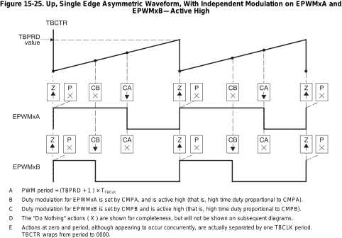
Lecture notes
This slide shows TI Figure 15-25 from the F28379D reference manual: "Up, Single Edge Asymmetric Waveform, With Independent Modulation on EPWMxA and EPWMxB, Active High." At the top, the time-base counter TBCTR draws a sawtooth. It ramps from zero up to the TBPRD value, then drops back to zero, over two full periods. Dashed vertical lines mark the moments when the counter equals CMPB (CB), and later when it equals CMPA (CA).
Below the counter are two rows of event boxes labeled Z (zero), P (period), CB and CA. Each box holds an up arrow (set high), a down arrow (clear low), or an X (do nothing). For EPWMxA, Z is set and CA is clear, so the output goes high at zero and low at CMPA. For EPWMxB, Z is set and CB is clear, so it goes high at zero and low at CMPB. CMPB is smaller than CMPA, so the EPWMxB pulse is shorter.
The notes under the figure read as follows. The PWM period = (TBPRD + 1) * T_TBCLK, that is, TBPRD plus one, times the time-base clock period. Duty for EPWMxA is set by CMPA and duty for EPWMxB is set by CMPB, and both are active high, so high time is proportional to the compare value. The X actions are shown only for completeness. Zero and period events look simultaneous but are actually one TBCLK apart, because TBCTR wraps from period to 0000.
This is the AQCTLA register from the last slide in action. For channel A you set ZRO to "set" and CAU to "clear", and every other field is "do nothing." The duty cycle is then CMPA / (TBPRD + 1). A common mistake is leaving the Z action unset, which gives you an output that never goes high again.
Next, see what changes when the actions flip to active low.
68. PWM – Duty cycle (4/8)
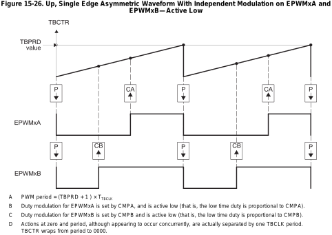
What is this?
What is it being set to?
What is it being set to?
Lecture notes
This slide shows Texas Instruments Figure 15-26, "Up, Single Edge Asymmetric Waveform With Independent Modulation on EPWMxA and EPWMxB, Active Low." At the top, the time-base counter TBCTR ramps up to the TBPRD value and wraps back, forming a sawtooth. Below it are two output traces, EPWMxA and EPWMxB. Above each trace is a row of action markers. Red callouts ask three questions: "What is this?" points at the marker at the period event, and "What is it being set to?" points at the CA marker on the A row and the CB marker on the B row.
Work out the answers before reading on. The marker at the top of each ramp is the period event, where TBCTR equals TBPRD. At that event both outputs are cleared low. At CA, where the counter equals CMPA while counting up, EPWMxA is set high. At CB, EPWMxB is set high.
In code from slide 66, the action encoding is 0 for do nothing, 1 for clear, 2 for set, and 3 for toggle. For output A that gives AQCTLA.bit.PRD = 1 and AQCTLA.bit.CAU = 2, with ZRO left at 0.
The figure's notes say the following:
A. The period is (TBPRD + 1) times T_TBCLK.
B and C. Each output is active low, so its low time is proportional to CMPA or CMPB.
D. The zero and period actions look simultaneous but are actually one TBCLK apart, because TBCTR wraps from the period value to 0000.
A common mistake is to assume that a larger CMPA always means more on-time. Compared with slide 67, this configuration inverts that: a larger CMPA means a longer low time and less high time. Here CMPB is below CMPA, so EPWMxB rises first and spends less time low.
Next, you see the up-down count mode, which produces symmetric, dual-edge waveforms.
69. PWM – Duty cycle (5/8)
![Timing diagram, TI Figure 15-30, up-down-count dual-edge asymmetric PWM. The time-base counter TBCTR is a triangle wave rising from zero to the period value and falling back. EPWMxA is set high when the counter passes CMPA while counting up and cleared low when it passes CMPB while counting down, so the pulse can sit off-center; its low time is proportional to CMPA plus CMPB. EPWMxB is cleared at zero and set at period, giving a fixed 50 percent duty cycle. PWM period equals 2 times TBPRD times TBCLK.](L6-7_files/1f6da7c09062.svg)
What is this?
What is this?
What is this?
What is this?
Lecture notes
This slide shows TI Figure 15-30 from the F28379D reference manual: "Up-Down-Count, Dual Edge Asymmetric Waveform, With Independent Modulation on EPWMxA, Active Low." The time-base counter TBCTR is now a triangle wave. It counts up from zero to TBPRD, then back down to zero, and repeats. Below it are the two outputs, EPWMxA and EPWMxB. Red boxes labeled "What is this?" cover the action symbols where each output changes state. Your job is to name each action.
On EPWMxA, the first box sits where the counter crosses CMPA while counting up, and the output goes high: that is "set on CMPA, up count." The second box sits where the counter crosses CMPB while counting down, and the output goes low: that is "clear on CMPB, down count." The low stretch runs from CMPB on the way down, through zero, to CMPA on the way up. So the low time is proportional to CMPA + CMPB, as note D says.
Because the two edges use different compare registers, the pulse does not have to be centered on the period peak. That is the "asymmetric" pulse placement in note B. To make the output active high, swap the actions: clear on CMPA, set on CMPB (note E).
On EPWMxB, the output is cleared at zero and set at period. That gives a fixed 50 percent duty cycle (note F).
Notice the period formula changes in this mode. Here it is PWM period = 2 * TBPRD * TBCLK, because the counter travels up and back. In up-count mode it was (TBPRD + 1) * TBCLK. A common mistake is to reuse the up-count formula and end up at half the frequency you wanted.
Next, you see how the clock divide trades PWM period against duty-cycle resolution.
70. PWM – Duty cycle (6/8)
For the PWM you can set the clock divide to be very small such that your is very small; however, the problem is that that reduces your duty cycle resolution. As you will run into system clock resolution limitation.
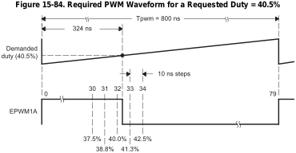
Lecture notes
This slide shows the trade-off between a fast PWM and a precise one. The text says you can make the clock divide very small so that T_pwm, the PWM period, is very short, but that reduces your duty-cycle resolution because you hit the limit of the system clock's resolution.
The figure is TI Figure 15-84, "Required PWM Waveform for a Requested Duty = 40.5%." The top trace is a ramp counter spanning one period, T_pwm = 800 ns. A dashed line marks the demanded duty of 40.5 percent, which falls at 324 ns. Below it, the output EPWM1A goes high at count 0 and should go low at 324 ns. The counter only moves in 10 ns steps, though, counting from 0 to 79. That gives 80 steps per period.
Tick marks at counts 30, 31, 32, 33 and 34 correspond to 37.5, 38.8, 40.0, 41.3 and 42.5 percent. The 324 ns edge would need count 32.4, so the closest you can get is count 32 (40.0 percent) or count 33 (41.3 percent).
Each step is 10 ns / 800 ns = 1.25 percent of duty cycle. In general, the finest duty-cycle step is about 1 / (number of counts per period). A short period means few counts, and few counts means coarse duty-cycle control. This figure comes from TI's discussion of the high-resolution PWM module, which exists specifically to place edges finer than one clock step.
Quick check: on the next slide the period register TBPRD is 25000 counts. What is the duty-cycle resolution? It is 1/25000, or 0.004 percent. A common mistake is choosing the highest possible PWM frequency without checking how many counts remain per period.
71. PWM – Duty cycle (7/8)
EALLOW;
// TBCTL
EPwm12Regs.TBCTL.bit.FREE_SOFT = 0x2; // Free Soft emulation = Free Run
EPwm12Regs.TBCTL.bit.CLKDIV = 0; // Clock divide = 1
EPwm12Regs.TBCTL.bit.CTRMODE = 1; // Count down Mode
EPwm12Regs.TBCTL.bit.PHSEN = 0; // Do not load time time-base counter from the time-base phase registry
// TBCTR
EPwm12Regs.TBCTR = 0; // Start Timer at zero
// TBPRD
// Set period of the PWM to 2kHz (500 us)
// Counter frequency is 50MHz
EPwm12Regs.TBPRD = 25000;
// CMPA
EPwm12Regs.CMPA.bit.CMPA = 12500; // Duty cycle at 50%, TBPRD / 2
EPwm12Regs.AQCTLA.bit.CAD = 0x1; // PWM12A output pin is set low when CMPA is reached
EPwm12Regs.AQCTLA.bit.PRD = 0x2; // the pin be set high when the TBCTR register is Period
EPwm12Regs.TBPHS.bit.TBPHS = 0;
EDIS;
GpioCtrlRegs.GPAPUD.bit.GPIO22 = 1; // For EPW12A
Lecture notes
This slide shows a complete C setup for ePWM module 12, output A, on the Red Board. It turns the timing diagrams from the previous slides into register writes. The code sits between EALLOW and EDIS, which unlock and then relock the protected peripheral registers.
The code configures the time-base control register, TBCTL, in four lines:
FREE_SOFT = 0x2 sets free run, so the PWM keeps running even when the debugger halts the CPU.
CLKDIV = 0 divides the clock by 1, so the counter runs at 50 MHz, one count every 20 ns.
CTRMODE = 1 selects count-down mode.
PHSEN = 0 means the counter is not loaded from the phase register, TBPHS, which is also set to 0.
The counter, TBCTR, starts at 0.
TBPRD = 25000 sets the period. At 50 MHz, a period of about 25000 counts times 20 ns gives 500 microseconds, or 2 kHz. Strictly, in count-down mode the period is (TBPRD + 1) counts, but the extra count is negligible here.
CMPA = 12500, half of TBPRD, gives 50 percent duty.
Two action-qualifier settings define the edges. AQCTLA.PRD = 0x2 sets the pin high when the counter is loaded with the period value. AQCTLA.CAD = 0x1 clears the pin low when the counter, counting down, reaches CMPA.
The last line writes GPAPUD for GPIO22 = 1. This disables the internal pull-up on GPIO22, the pin that carries EPWM12A. The pin also has to be muxed to its EPWM function.
Quick check: in this count-down arrangement the pin is high from 25000 down to 12500, so the high time is TBPRD minus CMPA. At 50 percent that is the same as CMPA/TBPRD. If you instead count up, set the pin at zero and clear it on CMPA while counting up, the duty cycle is simply CMPA/TBPRD. That is the rule the next slide's exercises use. Always check which edge your action qualifier uses before trusting your duty-cycle math.
72. PWM – Duty cycle (8/8)
EPwm12Regs.TBPRD = 100;
EPwm12Regs.CMPA.bit.CMPA = 50;
What is the duty cycle?
50%
EPwm12Regs.TBPRD = 100;
EPwm12Regs.CMPA.bit.CMPA = 25;
What is the duty cycle?
25%
EPwm12Regs.TBPRD = 100;
EPwm12Regs.CMPA.bit.CMPA = 75;
What is the duty cycle?
75%
Lecture notes
This slide is a quick self-check on duty cycle. It shows three short code examples. Each sets EPwm12Regs.TBPRD, the time-base period register, to 100 and then sets EPwm12Regs.CMPA.bit.CMPA, the compare A value, to a different number. After each example the slide asks "What is the duty cycle?" and gives the answer: CMPA = 50 gives 50%, CMPA = 25 gives 25%, and CMPA = 75 gives 75%.
The rule behind all three is that duty cycle is the fraction of each period the output spends high. Here that is CMPA divided by TBPRD: duty = CMPA / TBPRD, so 50 / 100 = 0.5, or 50%. TBPRD sets how many counts make up one period. CMPA sets the count at which the output changes state. A period of 100 is convenient because CMPA reads directly as a percentage.
Connecting to slide 70, TBPRD = 100 also means each step of CMPA changes the duty by exactly 1%. That is your resolution. A larger TBPRD, like the 25000 on the previous slide, gives much finer steps but a lower PWM frequency.
A common mistake is forgetting that the result depends on your action-qualifier settings, not just on the two numbers. These answers assume the output is high while the counter is below CMPA. Suppose instead the pin goes high at period and low at CMPA while counting down, as in the previous slide's setup. Then the output is high while the counter is above CMPA, and the duty is 1 - CMPA/TBPRD. In that case CMPA = 25 would give 75%. Always check AQCTLA on the scope in lab.
Next, we use this duty cycle control to make PWM act as a DAC.
73. PWM – DAC
It is also possible to use PWM as a DAC! By selecting the proper duty cycle, any DAC output voltage can be obtained. You need to remove the high-frequency signals to make this work.
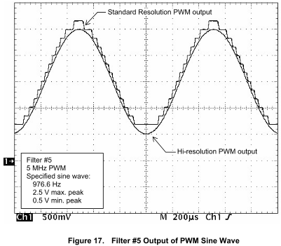
Lecture notes
This slide shows that a PWM pin can act as a DAC, a digital-to-analog converter. The text says that by choosing the right duty cycle you can produce any output voltage, as long as you remove the high-frequency content of the signal. Below the text is an oscilloscope capture at 500 millivolts per division vertically and 200 microseconds per division horizontally. A 976.6 hertz sine wave swings between 0.5 V and 2.5 V. It is generated from a 5 MHz PWM signal passed through a low-pass filter labeled filter number 5. Two traces are overlaid. The hi-resolution PWM output is a smooth sine that reaches the specified peaks. The standard-resolution PWM output follows the same shape as a visible staircase, with flat steps that miss the true minimum and slightly overshoot the maximum.
The key idea is averaging. A PWM pin is either high or low, but its average voltage is V_avg = D * V_high, where D is the duty cycle. On the Red Board, V_high is 3.3 V, so a 50% duty cycle averages 1.65 V. A low-pass filter extracts that average. Choose its cutoff well below the PWM frequency, so the switching ripple is removed, but above the frequency of the signal you want, so the sine wave passes through.
The staircase comes from resolution. From the last slide, D = CMPA / TBPRD. That means you only get about TBPRD + 1 distinct levels. A fast PWM has a small TBPRD, so it has few steps. High-resolution PWM places the edges more finely than one clock count, which smooths the steps.
Quick check: if you raise the PWM frequency, what happens to the number of voltage levels? Next, you will see that a motor acts as its own low-pass filter for PWM.
74. Motor / Servo
Lecture notes
This is a section title slide reading "Motor / Servo" on the orange Illinois background, with faint hand-drawn math and chemistry sketches as decoration.
So far you have used PWM to dim LEDs and, with a low-pass filter, as a DAC. Now you use that same duty cycle to drive actuators. Next you see how an H-bridge lets PWM set a DC motor's speed and direction, then how an RC servo reads its commanded angle from the PWM pulse width.
75. H-Bridge (1/2)
YouTube video: What is an H-Bridge? (CircuitBread)
Lecture notes
This slide plays a short CircuitBread video, "What is an H-Bridge?" The thumbnail shows four transistors arranged in an H around a motor: PMOS switches S1 and S3 on top, connected to Vcc, and NMOS switches S2 and S4 on the bottom, connected to ground. An orange path traces current from Vcc through S1, across the motor, and down through S4. A square-wave PWM signal drives S4.
While you watch, notice two things. Switching the diagonal pair reverses the current, which reverses the motor's direction. PWM on a switch sets the speed. Next, you see how the ePWM modules drive each leg of the bridge.
76. H-Bridge (2/2)
![Block diagram and circuit for controlling a full H-bridge with two ePWM modules at the same frequency. Master ePWM1 has phase 0 degrees and an optional external SyncIn. Its SyncOut, selected at counter equals zero, feeds the SyncIn of slave ePWM2, whose phase register is enabled with a variable phase. EPWM1A and 1B drive the high and low MOSFETs of the left leg, and EPWM2A and 2B drive the right leg, across a capacitor on the DC bus. The leg midpoints drive a transformer whose secondary feeds a diode bridge rectifier and an output filter producing V out. Varying the slave's phase shift sets the output.](L6-7_files/0469c7f09c42.svg)
Lecture notes
This slide shows Figure 15-72 from the TI F28379D Technical Reference Manual, "Controlling a Full-H Bridge Stage (F_PWM2 = F_PWM1)." The title means both PWM modules run at the same frequency.
On the left are two ePWM blocks. The top block, labeled Master, has its phase register set to Phi = 0 degrees and an optional external SyncIn arrow coming in from above. Its SyncOut selector offers three choices: CTR = zero, CTR = CMPB, or X (disabled). The switch is drawn on CTR = zero, and the SyncOut arrow runs down into the SyncIn of the lower block, labeled Slave. The slave's phase register is enabled with Phi = Var degrees, where Var means variable. The master outputs EPWM1A and EPWM1B, and the slave outputs EPWM2A and EPWM2B.
On the right, a DC bus, V_DC_bus, with a capacitor across it feeds four MOSFETs arranged in an H. EPWM1A drives the top left switch, 1B the bottom left, 2A the top right and 2B the bottom right. The two leg midpoints connect to a transformer primary. The secondary feeds a four-diode bridge rectifier, then a series filter element and a capacitor, giving V_out.
Here is how it works. Each time the master counter reaches zero, it sends a sync pulse, and the slave loads its phase value into its own counter. The slave's waveform is therefore shifted by Var degrees. With zero shift, both legs switch together and the transformer sees no voltage. With 180 degrees, it sees a full square wave. The phase shift therefore sets the output. This is a phase-shifted full-bridge DC-DC converter, which is more advanced than what you need in this class, but it shows how ePWM synchronization is used.
A common mistake is to turn on the high and low switch of the same leg at once, for example 1A and 1B. This "shoot-through" shorts the DC bus. The ePWM dead-band submodule prevents it.
Next, you see that the H-bridge chip used in class handles all of this internally from a single PWM signal.
77. H bridge (1/2)
For the H-bridge chip that we will be using in class, the work has been simplified for you where, you can control the velocity and direction from a single PWM signal.
The duty cycle from the PWM is what determines the motor’s behavior!
- 0% = turns the motor to go backwards
- 50% = turns the motor forwards and backwards (makes it so that the motor is stationary)
- 100% = turns the motor to go forward
What happens if we set a duty cycle of 75%?
We are going 50% of the maximum forward speed!
Lecture notes
This slide, titled "H bridge," explains how you control the motor through the H-bridge chip used in class. The words "H-bridge chip" are a link to that chip's documentation. The chip is set up so that one PWM signal sets both the speed and the direction of the motor, and the duty cycle of that signal determines what the motor does. The slide lists three cases: 0% duty cycle drives the motor fully backwards. 50% switches the motor forwards and backwards equally, so it stays stationary. 100% drives it fully forward. It then asks: what happens at a 75% duty cycle? The answer: the motor runs at 50% of its maximum forward speed.
Here is why 50% means stopped. The PWM switches far faster than the motor can respond mechanically. The motor's inductance and inertia therefore respond only to the average voltage. At 50% the bridge spends equal time applying plus and minus supply voltage, so the average is zero.
In general, speed fraction = (duty - 50%) / 50%. At 75% that gives (75 - 50)/50 = +0.5, half speed forward. At 25% it gives -0.5, half speed backward. The range from 50% to 100% covers forward motion, and 50% down to 0% covers reverse.
A common mistake is assuming 0% duty means "off." With this chip, 0% is full reverse. When you initialize the ePWM on the robot, start the compare value at half the period so the motor is stationary at power-up.
Quick check: what duty cycle gives 80% of maximum reverse speed? The answer is 10%.
Next, we look at the chip's pinout and internals to see how it builds the H-bridge.
78. H bridge (2/2)
![Pinout and internal schematic of the A3952SB 16-pin H-bridge driver chip. Left pins: 1 BRAKE (active low), 2 REF, 3 RC, 4 and 5 ground, 6 logic supply V sub CC, 7 PHASE, 8 ENABLE (active low). Right pins: 16 and 9 load supply V sub BB, 15 OUT B, 14 MODE, 13 and 12 ground, 11 SENSE, 10 OUT A. Inside, a logic block drives four transistors forming an H-bridge. High-side transistors connect V sub BB to each output, and low-side transistors connect each output to SENSE. Each output has flyback diodes to V sub BB and to ground.](L6-7_files/f2b8d7ee64dc.svg)
Lecture notes
This slide shows the actual H-bridge driver chip behind the single-PWM motor control from the previous slide: the Allegro A3952SB. It is drawn as a 16-pin package with a notch at the top marking pin orientation, with the internal circuit inside.
Pins 1 to 8 run down the left side. Pin 1 is BRAKE with a bar over it, pin 2 is REF, pin 3 is RC, pins 4 and 5 are GROUND, pin 6 is LOGIC SUPPLY (V_CC), pin 7 is PHASE, and pin 8 is ENABLE, also barred. A bar means active low: the function happens when the pin is pulled low. Pins 9 to 16 run up the right side. Pins 9 and 16 are LOAD SUPPLY (V_BB), pin 10 is OUT_A, pin 11 is SENSE, pins 12 and 13 are GROUND, pin 14 is MODE, and pin 15 is OUT_B.
Inside, a LOGIC block drives four transistors arranged as an H. Two high-side transistors connect V_BB to OUT_A and OUT_B. Two low-side transistors connect each output down to SENSE. Each output also has diodes to V_BB and to ground. These are flyback diodes, which give the motor's inductive current a safe path when the transistors switch off.
The chip uses two separate supplies. V_CC powers the logic, and V_BB is the motor voltage. PHASE selects which diagonal of the H conducts, which sets the motor direction. If you drive PHASE with a PWM signal, the bridge flips direction every cycle. At a 50% duty cycle the average motor voltage is zero, which is why 50% holds the motor stationary.
A resistor on SENSE lets the chip measure motor current. REF and RC set the current limit and the off-time.
A common mistake is to swap V_CC and V_BB, or to wire only one of the two load supply pins.
As a quick check, ask yourself what happens if you leave ENABLE floating high.
Next, you will see a different PWM consumer: the RC servo.
79. RC Servo (1/2)
RC Servos are position-controlled devices (not continuous rotation) controlled by a specific PWM protocol.
2-types of servo motor,
- Closed loop: physically limited to 0-180 degrees (usually) rotation (with an internal pin), you want to be careful to not go to the extremes too often, it is a mechanical stop.
- Open loop: can do a full 360-degree rotation.
3 wires:
- Power
- GND
- Control: where the PWM signal is injected
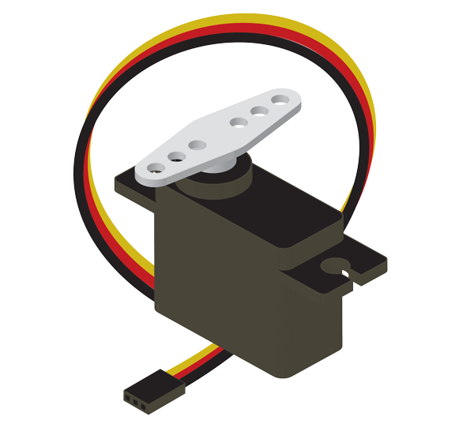
https://www.sparkfun.com/servos
Lecture notes
This slide shifts from DC motors driven through the H-bridge to a second kind of actuator you drive with PWM: the hobby RC servo. The text says RC servos are position-controlled devices, not continuous-rotation motors, and they are commanded with a specific PWM protocol.
The slide lists two types. A closed-loop servo has an internal position sensor and is physically limited by an internal pin, usually to 0 to 180 degrees of rotation. That pin is a mechanical stop, so avoid commanding the extremes too often: driving into the stop strains the gears and draws extra current. An open-loop servo can rotate a full 360 degrees. These are often sold as continuous-rotation servos, and in that case the PWM signal sets speed and direction rather than a held angle.
The slide also lists three wires: power, ground (GND), and control, which is where the PWM signal is injected. The illustration, from sparkfun.com/servos, shows a small rectangular servo case with mounting tabs, a white plastic horn with holes on the output shaft, and a three-wire lead ending in a three-pin connector. On this servo the black wire is ground, red is power, and yellow is the PWM control signal.
A common mistake is to treat the control wire as a power input. It only carries a logic-level signal. The servo's own supply must provide its running current, and the servo ground must be tied to the Red Board ground so the PWM signal has a common reference.
Next, you see how pulse width maps to angle.
80. RC Servo (2/2)
Maps PWM to desired orientation. For specific servo check the datasheet for:
- For the specific period
-
- Typically, 50Hz if not listed, which means a period of 20 ms = 20,000 μs
- Operating range and duty cycle mapping.
Lecture notes
This slide narrows the RC servo discussion from what a servo is to how you command it. The text says a servo maps a PWM signal to a desired orientation, and that for any specific servo you check the datasheet for two things. The first is the PWM period; if the datasheet does not list one, assume 50 Hz, which is a period of 20 ms, or 20,000 microseconds. The second is the operating range and the duty cycle mapping, meaning which pulse widths correspond to which angles.
The key idea is that the servo's internal electronics read the width of the high pulse, not its average power the way a motor or LED does. Duty cycle is pulse width divided by period: duty = t_high / T. A pulse of 1500 microseconds every 20,000 microseconds is 1500 / 20000 = 7.5 percent. Commanding a servo therefore uses only a small slice of the duty cycle range, roughly 5 to 10 percent. Setting 50 percent duty for "middle" is a common mistake that drives the servo to its stop or beyond.
On the Red Board, a 20 ms period is a long time for the ePWM counter. TBPRD is a 16-bit register with a maximum of 65535, so you will likely need the time-base clock prescaler to reach 50 Hz.
Next, you apply this to a real datasheet, the Hitec HS-85MG, and convert specific angles into microseconds and duty cycle percentages.
81. RC Servo – Example Datasheet

Using a PWM period of 20 ms, what is 90 degrees (neutral), 0 and 180?
This servo is only able to do and not the full 0-180 degrees!
Represents 90 degrees
Using a PWM period of 20 ms, what is 90 degrees (neutral), 50 and 130?
50 = 1100 us = 5.5%
130 = 1900 us = 9.5%
Tells you which direction is clockwise ( 130 degrees )
https://www.sparkfun.com/servo-hitec-hs-85mg-micro-size.html
Lecture notes
This slide shows the actual datasheet for the Hitec HS-85MG+ micro metal gear servo, with red annotations. The question at the top first asks, using a PWM period of 20 ms, what pulse gives 90 degrees (neutral), 0 and 180. It then changes to ask about 90, 50 and 130. The listed specs include pulse width control with 1500 microseconds as neutral, 4.8 to 6.0 volt operation, 3.0 to 3.5 kg·cm stall torque, an 8 microsecond dead band and 21.9 grams weight.
Start with the boxed "1500usec NEUTRAL," which the annotation says represents 90 degrees. Next, the operating angle reads 40 degrees per side for 400 microseconds of pulse travel. That is 10 microseconds per degree. An arrow points out that this servo can only do 90 plus or minus 40 degrees, not the full 0 to 180. So 0 and 180 are not reachable, which is why the question changes to 50 and 130.
The direction line says 1500 to 1900 microseconds is clockwise, which corresponds to 130 degrees.
To get duty cycle, divide the pulse by the 20,000 microsecond period:
130 degrees = 1900 us, and 1900/20000 = 9.5%.
90 degrees = 1500 us = 7.5%.
50 degrees = 1100 us = 5.5%.
On the board, the compare value is that duty fraction times TBPRD.
A common mistake is to assume every servo maps 1000 to 2000 microseconds onto 0 to 180 degrees. Always read the datasheet. If you command a pulse beyond its range, you can drive it into its mechanical stop.
Quick check: what pulse gives 70 degrees? It is 1300 us, or 6.5%.
Next, you keep the duty cycle fixed and vary the frequency instead, to play notes on a piezo buzzer.
82. Piezo Buzzer (1/2)
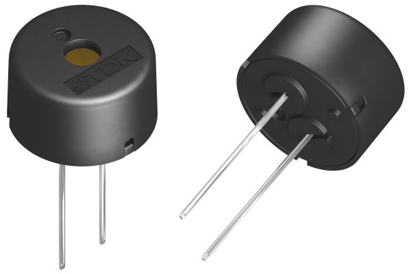
Instead of varying the duty cycle, we define notes by the frequency that we put into the buzzer!
Allows us to have different tones with PWM.
We thus set CMPA = 0, ZRO = 0b11 so that it toggles the output signal and just modify TBPRD.
Since we toggle the output, we need to half the period otherwise we would get the wrong note!
We will go through Fast Fourier Transform next week.
We set the clock divide (divide by 2) so that we can get lower notes!
Lecture notes
This slide shows a photo of a TDK piezo buzzer, a small black cylinder with a sound hole on top and two leads underneath, next to the rules for driving it with the ePWM module.
With the LED, the motors and the RC servo you varied the duty cycle. With the buzzer you vary the frequency instead, because pitch is set by how fast the piezo disk is pushed back and forth. One PWM channel can therefore play different notes.
The configuration is simple. Set CMPA = 0 and set the ZRO field of the action qualifier to 0b11, which means "toggle the output each time the counter reaches zero." The compare value no longer matters. You only change TBPRD to pick a note.
Because the output toggles once per counter period, one full high-and-low cycle takes two counter periods. That is why the slide says to halve the period. In up-count mode, TBPRD is about TBCLK / (2*f). If you forget the factor of 2, every note plays one octave too low.
The clock divide by 2 matters because TBPRD is a 16-bit register, so its maximum is 65535. The time-base clock is 50 MHz / 2 = 25 MHz. The lowest note you can reach is then about 25,000,000 / (2*65535), which is roughly 191 Hz. Without the divide, the floor is about 381 Hz, and middle C at 261.63 Hz would be out of reach. With the divide, middle C needs TBPRD = 25,000,000 / (2*261.63), which is about 47777.
The toggle produces a 50% square wave, not a pure tone. Next week's Fast Fourier Transform lecture gives you a way to look at what frequencies a signal like this contains. The next slide lists the TBPRD value for each note.
83. Piezo Buzzer (2/2)
#define C4NOTE ((uint16_t)(((FUDGEFACTORNOTE*50000000/2)/2)/261.63)) // TBPRD 47777
#define D4NOTE ((uint16_t)(((FUDGEFACTORNOTE*50000000/2)/2)/293.66)) // TBPRD 42566
#define E4NOTE ((uint16_t)(((FUDGEFACTORNOTE*50000000/2)/2)/329.63)) // TBPRD 37921
#define F4NOTE ((uint16_t)(((FUDGEFACTORNOTE*50000000/2)/2)/349.23)) // TBPRD 35793
#define G4NOTE ((uint16_t)(((FUDGEFACTORNOTE*50000000/2)/2)/392.00)) // TBPRD 31887
#define A4NOTE ((uint16_t)(((FUDGEFACTORNOTE*50000000/2)/2)/440.00)) // TBPRD 28409
#define B4NOTE ((uint16_t)(((FUDGEFACTORNOTE*50000000/2)/2)/493.88)) // TBPRD 25309
#define C5NOTE ((uint16_t)(((FUDGEFACTORNOTE*50000000/2)/2)/523.25)) // TBPRD 23889
#define D5NOTE ((uint16_t)(((FUDGEFACTORNOTE*50000000/2)/2)/587.33)) // TBPRD 21282
#define E5NOTE ((uint16_t)(((FUDGEFACTORNOTE*50000000/2)/2)/659.25)) // TBPRD 18960
#define F5NOTE ((uint16_t)(((FUDGEFACTORNOTE*50000000/2)/2)/698.46)) // TBPRD 17896
#define G5NOTE ((uint16_t)(((FUDGEFACTORNOTE*50000000/2)/2)/783.99)) // TBPRD 15944
#define A5NOTE ((uint16_t)(((FUDGEFACTORNOTE*50000000/2)/2)/880.00)) // TBPRD 14204
#define B5NOTE ((uint16_t)(((FUDGEFACTORNOTE*50000000/2)/2)/987.77)) // TBPRD 12654
#define F4SHARPNOTE ((uint16_t)(((FUDGEFACTORNOTE*50000000/2)/2)/369.99)) // TBPRD 33784
#define G4SHARPNOTE ((uint16_t)(((FUDGEFACTORNOTE*50000000/2)/2)/415.30)) // TBPRD 30098
#define A4FLATNOTE ((uint16_t)(((FUDGEFACTORNOTE*50000000/2)/2)/415.30)) // TBPRD 30098
#define C5SHARPNOTE ((uint16_t)(((FUDGEFACTORNOTE*50000000/2)/2)/554.37)) // TBPRD 22548
#define A5FLATNOTE ((uint16_t)(((FUDGEFACTORNOTE*50000000/2)/2)/830.61)) // TBPRD 15049
Note frequency!
We thus set TBPRD
Divisions handle the clock divide + half frequency
Lecture notes
This slide shows the code that turns musical notes into PWM settings for the piezo buzzer. It is a list of C #define macros, one per note, from C4 up to B5, plus a few sharps and flats: F4 sharp, G4 sharp, A4 flat, C5 sharp and A5 flat. Every line has the same form. For example, C4NOTE is defined as ((uint16_t)(((FUDGEFACTORNOTE*50000000/2)/2)/261.63)), with the comment TBPRD 47777. Each comment gives the resulting TBPRD value: A4 at 440 Hz gives 28409, C5 at 523.25 Hz gives 23889, and B5 at 987.77 Hz gives 12654.
Red boxes and red text annotate the expression. The two divisions by 2 "handle the clock divide plus half frequency." The final divisor is the "note frequency," which is how you set TBPRD.
Here is the arithmetic. You start from the 50 MHz clock. The first divide by 2 is the clock divide from the previous slide. The second divide by 2 comes from toggling: the output flips once per counter period, so one full square-wave cycle takes two periods. That gives 12.5 MHz divided by the note frequency. Check it yourself: 12,500,000 / 440 = 28409. FUDGEFACTORNOTE is a correction multiplier, and the listed comments correspond to a value of about 1. Also note that G4 sharp and A4 flat share 415.30 Hz because they are the same pitch.
The reason for the clock divide is the uint16_t cast. TBPRD is a 16-bit register, so its maximum is 65535. Quick check: without the clock divide, what would C4 need? It would need 25,000,000 / 261.63, about 95,554, which overflows. The divide is what makes the low notes reachable.
Next, we open the floor for questions on encoders and PWM.
84. Questions? (2/2)
Lecture notes
This slide reads "Questions?" in large white text centered on a dark navy background. Faint hand-drawn sketches of equations, a cube, a sphere, chemical structures and a diagram decorate the background. The orange Illinois "I" logo sits in the top right, with "Systems Engineering" and "Grainger Engineering" along the bottom.
This is a chance to ask about anything from Lectures 6 and 7: optical and absolute encoders, the eQEP, SSI and FIFOs, PWM duty cycle and frequency, H-bridges, RC servos, or the buzzer note calculations.
85. End of Lectures 6–7
Lecture notes
This closing slide marks the end of Lectures 6 and 7. It shows the Grainger College of Engineering logo, the block "I" with "University of Illinois Urbana-Champaign," on an orange background. Faint hand-drawn sketches of equations, a cube, a sphere, chemical structures and an arrow diagram are decorative.
These two lectures covered quadrature encoders and the eQEP peripheral, absolute encoders over SSI with the FIFO, and PWM driving H-bridges, RC servos and the piezo buzzer. You use all of these in the upcoming labs.